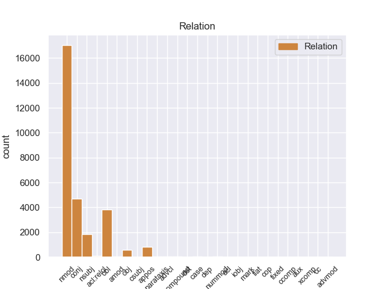
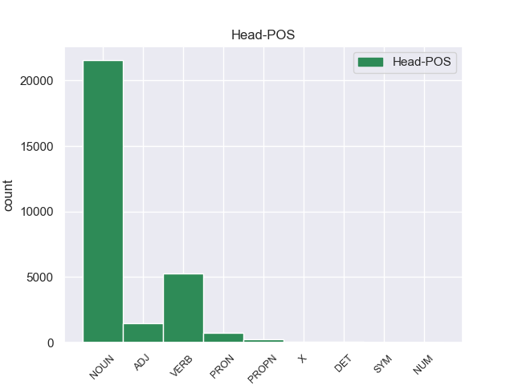
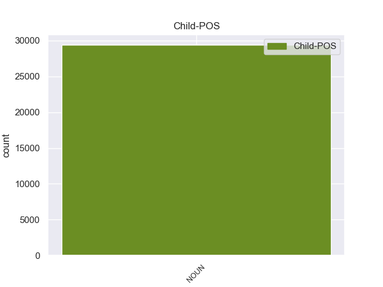

Distribution of features within this leaf



Agreement Rules sorted by frequency.
- When the dependent token is the nominal modifier(nmod) of the head token, and the head token is NOUN and the dependent token is NOUN.
1 Esta _ _ _ _ 0 _ _ _
2 teoría _ _ _ _ 0 _ _ _
3 se _ _ _ _ 0 _ _ _
4 avenía _ _ _ _ 0 _ _ _
5 bien _ _ _ _ 0 _ _ _
6 con _ _ _ _ 0 _ _ _
7 la _ _ _ _ 0 _ _ _
8 creencia _ _ _ _ 0 _ _ _
9 de _ _ _ _ 0 _ _ _
10 el _ _ _ _ 0 _ _ _
11 Romanticismo _ _ _ _ 0 _ _ _
12 en _ _ _ _ 0 _ _ _
13 un _ _ _ _ 0 _ _ _
14 volkgeist _ _ _ _ 0 _ _ _
15 , _ _ _ _ 0 _ _ _
16 " _ _ _ _ 0 _ _ _
17 genio _ _ _ _ 0 _ _ _
18 o _ _ _ _ 0 _ _ _
19 espíritu espíritu NOUN _ Gender=Masc|Number=Sing 0 _ _ _
20 de _ _ _ _ 0 _ _ _
21 el _ _ _ _ 0 _ _ _
22 pueblo pueblo NOUN _ Gender=Masc|Number=Sing 19 nmod _ SpaceAfter=No
23 " _ _ _ _ 0 _ _ _
24 , _ _ _ _ 0 _ _ _
25 autor _ _ _ _ 0 _ _ _
26 colectivo _ _ _ _ 0 _ _ _
27 y _ _ _ _ 0 _ _ _
28 anónimo _ _ _ _ 0 _ _ _
29 de _ _ _ _ 0 _ _ _
30 una _ _ _ _ 0 _ _ _
31 poesía _ _ _ _ 0 _ _ _
32 nacional _ _ _ _ 0 _ _ _
33 . _ _ _ _ 0 _ _ _
1 Esta _ _ _ _ 0 _ _ _
2 teoría _ _ _ _ 0 _ _ _
3 se _ _ _ _ 0 _ _ _
4 avenía _ _ _ _ 0 _ _ _
5 bien _ _ _ _ 0 _ _ _
6 con _ _ _ _ 0 _ _ _
7 la _ _ _ _ 0 _ _ _
8 creencia _ _ _ _ 0 _ _ _
9 de _ _ _ _ 0 _ _ _
10 el _ _ _ _ 0 _ _ _
11 Romanticismo _ _ _ _ 0 _ _ _
12 en _ _ _ _ 0 _ _ _
13 un _ _ _ _ 0 _ _ _
14 volkgeist _ _ _ _ 0 _ _ _
15 , _ _ _ _ 0 _ _ _
16 " _ _ _ _ 0 _ _ _
17 genio genio NOUN _ Gender=Masc|Number=Sing 0 _ _ _
18 o _ _ _ _ 0 _ _ _
19 espíritu espíritu NOUN _ Gender=Masc|Number=Sing 17 conj _ _
20 de _ _ _ _ 0 _ _ _
21 el _ _ _ _ 0 _ _ _
22 pueblo _ _ _ _ 0 _ _ _
23 " _ _ _ _ 0 _ _ _
24 , _ _ _ _ 0 _ _ _
25 autor _ _ _ _ 0 _ _ _
26 colectivo _ _ _ _ 0 _ _ _
27 y _ _ _ _ 0 _ _ _
28 anónimo _ _ _ _ 0 _ _ _
29 de _ _ _ _ 0 _ _ _
30 una _ _ _ _ 0 _ _ _
31 poesía _ _ _ _ 0 _ _ _
32 nacional _ _ _ _ 0 _ _ _
33 . _ _ _ _ 0 _ _ _
1 Jazmin _ _ _ _ 0 _ _ _
2 es _ _ _ _ 0 _ _ _
3 todo _ _ _ _ 0 _ _ _
4 lo _ _ _ _ 0 _ _ _
5 contrario _ _ _ _ 0 _ _ _
6 , _ _ _ _ 0 _ _ _
7 es _ _ _ _ 0 _ _ _
8 tímida _ _ _ _ 0 _ _ _
9 y _ _ _ _ 0 _ _ _
10 callada _ _ _ _ 0 _ _ _
11 , _ _ _ _ 0 _ _ _
12 pero _ _ _ _ 0 _ _ _
13 siempre _ _ _ _ 0 _ _ _
14 es _ _ _ _ 0 _ _ _
15 arrastrada arrastrar VERB _ Gender=Fem|Number=Sing|Tense=Past|VerbForm=Part 0 _ _ _
16 por _ _ _ _ 0 _ _ _
17 las _ _ _ _ 0 _ _ _
18 locuras locura NOUN _ Gender=Fem|Number=Plur 15 obl _ _
19 y _ _ _ _ 0 _ _ _
20 travesuras _ _ _ _ 0 _ _ _
21 que _ _ _ _ 0 _ _ _
22 inventa _ _ _ _ 0 _ _ _
23 Alma _ _ _ _ 0 _ _ _
24 . _ _ _ _ 0 _ _ _
1 " _ _ _ _ 0 _ _ _
2 Tenemos _ _ _ _ 0 _ _ _
3 todo _ _ _ _ 0 _ _ _
4 listo _ _ _ _ 0 _ _ _
5 , _ _ _ _ 0 _ _ _
6 la _ _ _ _ 0 _ _ _
7 venta _ _ _ _ 0 _ _ _
8 de _ _ _ _ 0 _ _ _
9 boletos _ _ _ _ 0 _ _ _
10 será _ _ _ _ 0 _ _ _
11 a _ _ _ _ 0 _ _ _
12 partir _ _ _ _ 0 _ _ _
13 de _ _ _ _ 0 _ _ _
14 mañana _ _ _ _ 0 _ _ _
15 de _ _ _ _ 0 _ _ _
16 8 _ _ _ _ 0 _ _ _
17 am _ _ _ _ 0 _ _ _
18 a _ _ _ _ 0 _ _ _
19 3 _ _ _ _ 0 _ _ _
20 pm _ _ _ _ 0 _ _ _
21 , _ _ _ _ 0 _ _ _
22 la _ _ _ _ 0 _ _ _
23 afición _ _ _ _ 0 _ _ _
24 de _ _ _ _ 0 _ _ _
25 el _ _ _ _ 0 _ _ _
26 Real _ _ _ _ 0 _ _ _
27 España _ _ _ _ 0 _ _ _
28 podrá _ _ _ _ 0 _ _ _
29 comprar _ _ _ _ 0 _ _ _
30 en _ _ _ _ 0 _ _ _
31 el _ _ _ _ 0 _ _ _
32 Banco _ _ _ _ 0 _ _ _
33 Continental _ _ _ _ 0 _ _ _
34 , _ _ _ _ 0 _ _ _
35 frente _ _ _ _ 0 _ _ _
36 a _ _ _ _ 0 _ _ _
37 el _ _ _ _ 0 _ _ _
38 estadio _ _ _ _ 0 _ _ _
39 Morazán _ _ _ _ 0 _ _ _
40 , _ _ _ _ 0 _ _ _
41 se _ _ _ _ 0 _ _ _
42 han _ _ _ _ 0 _ _ _
43 puesto _ _ _ _ 0 _ _ _
44 a _ _ _ _ 0 _ _ _
45 la _ _ _ _ 0 _ _ _
46 venta _ _ _ _ 0 _ _ _
47 800 _ _ _ _ 0 _ _ _
48 boletos _ _ _ _ 0 _ _ _
49 , _ _ _ _ 0 _ _ _
50 500 _ _ _ _ 0 _ _ _
51 en _ _ _ _ 0 _ _ _
52 sol _ _ _ _ 0 _ _ _
53 y _ _ _ _ 0 _ _ _
54 300 _ _ _ _ 0 _ _ _
55 en _ _ _ _ 0 _ _ _
56 preferencia _ _ _ _ 0 _ _ _
57 , _ _ _ _ 0 _ _ _
58 la _ _ _ _ 0 _ _ _
59 boletería boletería NOUN _ Gender=Fem|Number=Sing 65 nsubj _ _
60 de _ _ _ _ 0 _ _ _
61 el _ _ _ _ 0 _ _ _
62 España _ _ _ _ 0 _ _ _
63 está _ _ _ _ 0 _ _ _
64 ya _ _ _ _ 0 _ _ _
65 identificada identificado ADJ _ Gender=Fem|Number=Sing|VerbForm=Part 0 _ _ _
66 con _ _ _ _ 0 _ _ _
67 el _ _ _ _ 0 _ _ _
68 escudo _ _ _ _ 0 _ _ _
69 de _ _ _ _ 0 _ _ _
70 el _ _ _ _ 0 _ _ _
71 equipo _ _ _ _ 0 _ _ _
72 y _ _ _ _ 0 _ _ _
73 con _ _ _ _ 0 _ _ _
74 el _ _ _ _ 0 _ _ _
75 color _ _ _ _ 0 _ _ _
76 amarillo _ _ _ _ 0 _ _ _
77 " _ _ _ _ 0 _ _ _
78 , _ _ _ _ 0 _ _ _
79 comentó _ _ _ _ 0 _ _ _
80 Rolin _ _ _ _ 0 _ _ _
81 . _ _ _ _ 0 _ _ _
1 Tahai _ _ _ _ 0 _ _ _
2 es _ _ _ _ 0 _ _ _
3 uno uno PRON _ Gender=Masc|Number=Sing|PronType=Ind 0 _ _ _
4 de _ _ _ _ 0 _ _ _
5 los _ _ _ _ 0 _ _ _
6 lugares lugar NOUN _ Gender=Masc|Number=Plur 3 nmod _ _
7 más _ _ _ _ 0 _ _ _
8 lindos _ _ _ _ 0 _ _ _
9 de _ _ _ _ 0 _ _ _
10 la _ _ _ _ 0 _ _ _
11 isla _ _ _ _ 0 _ _ _
12 , _ _ _ _ 0 _ _ _
13 y _ _ _ _ 0 _ _ _
14 estar _ _ _ _ 0 _ _ _
15 hospedado _ _ _ _ 0 _ _ _
16 en _ _ _ _ 0 _ _ _
17 pleno _ _ _ _ 0 _ _ _
18 mirador _ _ _ _ 0 _ _ _
19 es _ _ _ _ 0 _ _ _
20 increíble _ _ _ _ 0 _ _ _
21 . _ _ _ _ 0 _ _ _
1 La _ _ _ _ 0 _ _ _
2 idea _ _ _ _ 0 _ _ _
3 inicial _ _ _ _ 0 _ _ _
4 de _ _ _ _ 0 _ _ _
5 este _ _ _ _ 0 _ _ _
6 tercer _ _ _ _ 0 _ _ _
7 libro _ _ _ _ 0 _ _ _
8 era _ _ _ _ 0 _ _ _
9 hacer _ _ _ _ 0 _ _ _
10 una _ _ _ _ 0 _ _ _
11 obra _ _ _ _ 0 _ _ _
12 " _ _ _ _ 0 _ _ _
13 para _ _ _ _ 0 _ _ _
14 compartir _ _ _ _ 0 _ _ _
15 con _ _ _ _ 0 _ _ _
16 los _ _ _ _ 0 _ _ _
17 colegas _ _ _ _ 0 _ _ _
18 de _ _ _ _ 0 _ _ _
19 profesión _ _ _ _ 0 _ _ _
20 " _ _ _ _ 0 _ _ _
21 , _ _ _ _ 0 _ _ _
22 y _ _ _ _ 0 _ _ _
23 de _ _ _ _ 0 _ _ _
24 ahí _ _ _ _ 0 _ _ _
25 que _ _ _ _ 0 _ _ _
26 en _ _ _ _ 0 _ _ _
27 las _ _ _ _ 0 _ _ _
28 cantidades _ _ _ _ 0 _ _ _
29 de _ _ _ _ 0 _ _ _
30 los _ _ _ _ 0 _ _ _
31 ingredientes _ _ _ _ 0 _ _ _
32 se _ _ _ _ 0 _ _ _
33 incluya _ _ _ _ 0 _ _ _
34 la _ _ _ _ 0 _ _ _
35 versión _ _ _ _ 0 _ _ _
36 para _ _ _ _ 0 _ _ _
37 75 _ _ _ _ 0 _ _ _
38 comensales _ _ _ _ 0 _ _ _
39 , _ _ _ _ 0 _ _ _
40 pero _ _ _ _ 0 _ _ _
41 luego _ _ _ _ 0 _ _ _
42 se _ _ _ _ 0 _ _ _
43 cambió _ _ _ _ 0 _ _ _
44 a _ _ _ _ 0 _ _ _
45 la _ _ _ _ 0 _ _ _
46 dimensión dimensión NOUN _ Gender=Fem|Number=Sing 0 _ _ _
47 familiar _ _ _ _ 0 _ _ _
48 ( _ _ _ _ 0 _ _ _
49 2 _ _ _ _ 0 _ _ _
50 y _ _ _ _ 0 _ _ _
51 6 _ _ _ _ 0 _ _ _
52 personas persona NOUN _ Gender=Fem|Number=Plur 46 appos _ SpaceAfter=No
53 ) _ _ _ _ 0 _ _ _
54 . _ _ _ _ 0 _ _ _
1 En _ _ _ _ 0 _ _ _
2 1991 _ _ _ _ 0 _ _ _
3 , _ _ _ _ 0 _ _ _
4 como _ _ _ _ 0 _ _ _
5 ya _ _ _ _ 0 _ _ _
6 está _ _ _ _ 0 _ _ _
7 indicado indicado ADJ _ Gender=Masc|Number=Sing|VerbForm=Part 0 _ _ _
8 en _ _ _ _ 0 _ _ _
9 el _ _ _ _ 0 _ _ _
10 párrafo párrafo NOUN _ Gender=Masc|Number=Sing 7 nmod _ _
11 anterior _ _ _ _ 0 _ _ _
12 , _ _ _ _ 0 _ _ _
13 se _ _ _ _ 0 _ _ _
14 creó _ _ _ _ 0 _ _ _
15 un _ _ _ _ 0 _ _ _
16 equipo _ _ _ _ 0 _ _ _
17 ad _ _ _ _ 0 _ _ _
18 hoc _ _ _ _ 0 _ _ _
19 para _ _ _ _ 0 _ _ _
20 averiguar _ _ _ _ 0 _ _ _
21 como _ _ _ _ 0 _ _ _
22 se _ _ _ _ 0 _ _ _
23 podía _ _ _ _ 0 _ _ _
24 desarrollar _ _ _ _ 0 _ _ _
25 el _ _ _ _ 0 _ _ _
26 Dialogo _ _ _ _ 0 _ _ _
27 Social _ _ _ _ 0 _ _ _
28 , _ _ _ _ 0 _ _ _
29 este _ _ _ _ 0 _ _ _
30 equipo _ _ _ _ 0 _ _ _
31 estaba _ _ _ _ 0 _ _ _
32 formado _ _ _ _ 0 _ _ _
33 por _ _ _ _ 0 _ _ _
34 representantes _ _ _ _ 0 _ _ _
35 de _ _ _ _ 0 _ _ _
36 todas _ _ _ _ 0 _ _ _
37 las _ _ _ _ 0 _ _ _
38 organizaciones _ _ _ _ 0 _ _ _
39 relacionadas _ _ _ _ 0 _ _ _
40 con _ _ _ _ 0 _ _ _
41 CES _ _ _ _ 0 _ _ _
42 , _ _ _ _ 0 _ _ _
43 UNICE _ _ _ _ 0 _ _ _
44 y _ _ _ _ 0 _ _ _
45 CEEP _ _ _ _ 0 _ _ _
46 ; _ _ _ _ 0 _ _ _
1 El _ _ _ _ 0 _ _ _
2 mismo _ _ _ _ 0 _ _ _
3 investigador investigador NOUN _ Gender=Masc|Number=Sing 5 nsubj _ _
4 ha _ _ _ _ 0 _ _ _
5 informado informar VERB _ Gender=Masc|Number=Sing|Tense=Past|VerbForm=Part 0 _ _ _
6 recientemente _ _ _ _ 0 _ _ _
7 de _ _ _ _ 0 _ _ _
8 el _ _ _ _ 0 _ _ _
9 primer _ _ _ _ 0 _ _ _
10 caso _ _ _ _ 0 _ _ _
11 documentado _ _ _ _ 0 _ _ _
12 de _ _ _ _ 0 _ _ _
13 una _ _ _ _ 0 _ _ _
14 plaga _ _ _ _ 0 _ _ _
15 resistente _ _ _ _ 0 _ _ _
16 a _ _ _ _ 0 _ _ _
17 el _ _ _ _ 0 _ _ _
18 algodón _ _ _ _ 0 _ _ _
19 transgénico _ _ _ _ 0 _ _ _
20 . _ _ _ _ 0 _ _ _
1 " _ _ _ _ 0 _ _ _
2 Tenemos _ _ _ _ 0 _ _ _
3 todo _ _ _ _ 0 _ _ _
4 listo _ _ _ _ 0 _ _ _
5 , _ _ _ _ 0 _ _ _
6 la _ _ _ _ 0 _ _ _
7 venta _ _ _ _ 0 _ _ _
8 de _ _ _ _ 0 _ _ _
9 boletos _ _ _ _ 0 _ _ _
10 será _ _ _ _ 0 _ _ _
11 a _ _ _ _ 0 _ _ _
12 partir _ _ _ _ 0 _ _ _
13 de _ _ _ _ 0 _ _ _
14 mañana _ _ _ _ 0 _ _ _
15 de _ _ _ _ 0 _ _ _
16 8 _ _ _ _ 0 _ _ _
17 am _ _ _ _ 0 _ _ _
18 a _ _ _ _ 0 _ _ _
19 3 _ _ _ _ 0 _ _ _
20 pm _ _ _ _ 0 _ _ _
21 , _ _ _ _ 0 _ _ _
22 la _ _ _ _ 0 _ _ _
23 afición _ _ _ _ 0 _ _ _
24 de _ _ _ _ 0 _ _ _
25 el _ _ _ _ 0 _ _ _
26 Real _ _ _ _ 0 _ _ _
27 España _ _ _ _ 0 _ _ _
28 podrá _ _ _ _ 0 _ _ _
29 comprar _ _ _ _ 0 _ _ _
30 en _ _ _ _ 0 _ _ _
31 el _ _ _ _ 0 _ _ _
32 Banco _ _ _ _ 0 _ _ _
33 Continental _ _ _ _ 0 _ _ _
34 , _ _ _ _ 0 _ _ _
35 frente _ _ _ _ 0 _ _ _
36 a _ _ _ _ 0 _ _ _
37 el _ _ _ _ 0 _ _ _
38 estadio _ _ _ _ 0 _ _ _
39 Morazán _ _ _ _ 0 _ _ _
40 , _ _ _ _ 0 _ _ _
41 se _ _ _ _ 0 _ _ _
42 han _ _ _ _ 0 _ _ _
43 puesto poner NOUN _ Gender=Masc|Number=Sing|VerbForm=Part 0 _ _ _
44 a _ _ _ _ 0 _ _ _
45 la _ _ _ _ 0 _ _ _
46 venta _ _ _ _ 0 _ _ _
47 800 _ _ _ _ 0 _ _ _
48 boletos boleto NOUN _ Gender=Masc|Number=Plur 43 nsubj _ SpaceAfter=No
49 , _ _ _ _ 0 _ _ _
50 500 _ _ _ _ 0 _ _ _
51 en _ _ _ _ 0 _ _ _
52 sol _ _ _ _ 0 _ _ _
53 y _ _ _ _ 0 _ _ _
54 300 _ _ _ _ 0 _ _ _
55 en _ _ _ _ 0 _ _ _
56 preferencia _ _ _ _ 0 _ _ _
57 , _ _ _ _ 0 _ _ _
58 la _ _ _ _ 0 _ _ _
59 boletería _ _ _ _ 0 _ _ _
60 de _ _ _ _ 0 _ _ _
61 el _ _ _ _ 0 _ _ _
62 España _ _ _ _ 0 _ _ _
63 está _ _ _ _ 0 _ _ _
64 ya _ _ _ _ 0 _ _ _
65 identificada _ _ _ _ 0 _ _ _
66 con _ _ _ _ 0 _ _ _
67 el _ _ _ _ 0 _ _ _
68 escudo _ _ _ _ 0 _ _ _
69 de _ _ _ _ 0 _ _ _
70 el _ _ _ _ 0 _ _ _
71 equipo _ _ _ _ 0 _ _ _
72 y _ _ _ _ 0 _ _ _
73 con _ _ _ _ 0 _ _ _
74 el _ _ _ _ 0 _ _ _
75 color _ _ _ _ 0 _ _ _
76 amarillo _ _ _ _ 0 _ _ _
77 " _ _ _ _ 0 _ _ _
78 , _ _ _ _ 0 _ _ _
79 comentó _ _ _ _ 0 _ _ _
80 Rolin _ _ _ _ 0 _ _ _
81 . _ _ _ _ 0 _ _ _
1 La _ _ _ _ 0 _ _ _
2 primera _ _ _ _ 0 _ _ _
3 vez _ _ _ _ 0 _ _ _
4 , _ _ _ _ 0 _ _ _
5 tenía _ _ _ _ 0 _ _ _
6 un _ _ _ _ 0 _ _ _
7 presupuesto _ _ _ _ 0 _ _ _
8 de _ _ _ _ 0 _ _ _
9 700 _ _ _ _ 0 _ _ _
10 € _ _ _ _ 0 _ _ _
11 en _ _ _ _ 0 _ _ _
12 el _ _ _ _ 0 _ _ _
13 servicio _ _ _ _ 0 _ _ _
14 oficial _ _ _ _ 0 _ _ _
15 ( _ _ _ _ 0 _ _ _
16 te _ _ _ _ 0 _ _ _
17 lo _ _ _ _ 0 _ _ _
18 cambio _ _ _ _ 0 _ _ _
19 todo _ _ _ _ 0 _ _ _
20 y _ _ _ _ 0 _ _ _
21 soluciono soluciono VERB _ Gender=Masc|Number=Sing|VerbForm=Fin 0 _ _ _
22 el _ _ _ _ 0 _ _ _
23 problema problema NOUN _ Gender=Masc|Number=Sing 21 obj _ SpaceAfter=No
24 ) _ _ _ _ 0 _ _ _
25 , _ _ _ _ 0 _ _ _
26 y _ _ _ _ 0 _ _ _
27 en _ _ _ _ 0 _ _ _
28 Pinauto _ _ _ _ 0 _ _ _
29 me _ _ _ _ 0 _ _ _
30 lo _ _ _ _ 0 _ _ _
31 solucionaron _ _ _ _ 0 _ _ _
32 por _ _ _ _ 0 _ _ _
33 unos _ _ _ _ 0 _ _ _
34 200 _ _ _ _ 0 _ _ _
35 € _ _ _ _ 0 _ _ _
36 , _ _ _ _ 0 _ _ _
37 cambiando _ _ _ _ 0 _ _ _
38 sólo _ _ _ _ 0 _ _ _
39 lo _ _ _ _ 0 _ _ _
40 necesario _ _ _ _ 0 _ _ _
41 . _ _ _ _ 0 _ _ _
1 De _ _ _ _ 0 _ _ _
2 los _ _ _ _ 0 _ _ _
3 616 _ _ _ _ 0 _ _ _
4 habitantes _ _ _ _ 0 _ _ _
5 , _ _ _ _ 0 _ _ _
6 Belmont _ _ _ _ 0 _ _ _
7 estaba _ _ _ _ 0 _ _ _
8 compuesto compuesto VERB _ Gender=Masc|Number=Sing|VerbForm=Part 0 _ _ _
9 por _ _ _ _ 0 _ _ _
10 el _ _ _ _ 0 _ _ _
11 97.4 _ _ _ _ 0 _ _ _
12 % _ _ _ _ 0 _ _ _
13 blancos _ _ _ _ 0 _ _ _
14 , _ _ _ _ 0 _ _ _
15 el _ _ _ _ 0 _ _ _
16 0 _ _ _ _ 0 _ _ _
17 % _ _ _ _ 0 _ _ _
18 eran _ _ _ _ 0 _ _ _
19 afroamericanos _ _ _ _ 0 _ _ _
20 , _ _ _ _ 0 _ _ _
21 el _ _ _ _ 0 _ _ _
22 0.49 _ _ _ _ 0 _ _ _
23 % _ _ _ _ 0 _ _ _
24 eran _ _ _ _ 0 _ _ _
25 amerindios _ _ _ _ 0 _ _ _
26 , _ _ _ _ 0 _ _ _
27 el _ _ _ _ 0 _ _ _
28 0 _ _ _ _ 0 _ _ _
29 % _ _ _ _ 0 _ _ _
30 eran _ _ _ _ 0 _ _ _
31 asiáticos _ _ _ _ 0 _ _ _
32 , _ _ _ _ 0 _ _ _
33 el _ _ _ _ 0 _ _ _
34 0 _ _ _ _ 0 _ _ _
35 % _ _ _ _ 0 _ _ _
36 eran _ _ _ _ 0 _ _ _
37 isleños isleño NOUN _ Gender=Masc|Number=Plur 8 conj _ _
38 de _ _ _ _ 0 _ _ _
39 el _ _ _ _ 0 _ _ _
40 Pacífico _ _ _ _ 0 _ _ _
41 , _ _ _ _ 0 _ _ _
42 el _ _ _ _ 0 _ _ _
43 1.62 _ _ _ _ 0 _ _ _
44 % _ _ _ _ 0 _ _ _
45 eran _ _ _ _ 0 _ _ _
46 de _ _ _ _ 0 _ _ _
47 otras _ _ _ _ 0 _ _ _
48 razas _ _ _ _ 0 _ _ _
49 y _ _ _ _ 0 _ _ _
50 el _ _ _ _ 0 _ _ _
51 0.49 _ _ _ _ 0 _ _ _
52 % _ _ _ _ 0 _ _ _
53 pertenecían _ _ _ _ 0 _ _ _
54 a _ _ _ _ 0 _ _ _
55 dos _ _ _ _ 0 _ _ _
56 o _ _ _ _ 0 _ _ _
57 más _ _ _ _ 0 _ _ _
58 razas _ _ _ _ 0 _ _ _
59 . _ _ _ _ 0 _ _ _
1 La _ _ _ _ 0 _ _ _
2 experimentación _ _ _ _ 0 _ _ _
3 de _ _ _ _ 0 _ _ _
4 Torres _ _ _ _ 0 _ _ _
5 Quevedo _ _ _ _ 0 _ _ _
6 en _ _ _ _ 0 _ _ _
7 el _ _ _ _ 0 _ _ _
8 área _ _ _ _ 0 _ _ _
9 de _ _ _ _ 0 _ _ _
10 transbordadores _ _ _ _ 0 _ _ _
11 , _ _ _ _ 0 _ _ _
12 funiculares funicular ADJ _ Gender=Masc|Number=Plur 0 _ _ _
13 o _ _ _ _ 0 _ _ _
14 teleféricos teleférico NOUN _ Gender=Masc|Number=Plur 12 conj _ SpaceAfter=No
15 , _ _ _ _ 0 _ _ _
16 comenzó _ _ _ _ 0 _ _ _
17 muy _ _ _ _ 0 _ _ _
18 pronto _ _ _ _ 0 _ _ _
19 durante _ _ _ _ 0 _ _ _
20 su _ _ _ _ 0 _ _ _
21 residencia _ _ _ _ 0 _ _ _
22 en _ _ _ _ 0 _ _ _
23 su _ _ _ _ 0 _ _ _
24 pueblo _ _ _ _ 0 _ _ _
25 natal _ _ _ _ 0 _ _ _
26 , _ _ _ _ 0 _ _ _
27 Molledo _ _ _ _ 0 _ _ _
28 . _ _ _ _ 0 _ _ _
1 Una _ _ _ _ 0 _ _ _
2 posibilidad posibilidad NOUN _ Gender=Fem|Number=Sing 24 nsubj _ _
3 que _ _ _ _ 0 _ _ _
4 tiene _ _ _ _ 0 _ _ _
5 esta _ _ _ _ 0 _ _ _
6 habitación _ _ _ _ 0 _ _ _
7 gracias _ _ _ _ 0 _ _ _
8 a _ _ _ _ 0 _ _ _
9 que _ _ _ _ 0 _ _ _
10 es _ _ _ _ 0 _ _ _
11 menos _ _ _ _ 0 _ _ _
12 ruidosa _ _ _ _ 0 _ _ _
13 por _ _ _ _ 0 _ _ _
14 encontrar _ _ _ _ 0 _ _ _
15 se _ _ _ _ 0 _ _ _
16 alejada _ _ _ _ 0 _ _ _
17 de _ _ _ _ 0 _ _ _
18 el _ _ _ _ 0 _ _ _
19 resto _ _ _ _ 0 _ _ _
20 de _ _ _ _ 0 _ _ _
21 cuartos _ _ _ _ 0 _ _ _
22 , _ _ _ _ 0 _ _ _
23 es _ _ _ _ 0 _ _ _
24 la él PRON _ Case=Acc|Gender=Fem|Number=Sing|Person=3|PrepCase=Npr|PronType=Prs 0 _ _ _
25 de _ _ _ _ 0 _ _ _
26 convertir _ _ _ _ 0 _ _ _
27 la _ _ _ _ 0 _ _ _
28 en _ _ _ _ 0 _ _ _
29 un _ _ _ _ 0 _ _ _
30 estudio _ _ _ _ 0 _ _ _
31 . _ _ _ _ 0 _ _ _
1 El _ _ _ _ 0 _ _ _
2 actual _ _ _ _ 0 _ _ _
3 escudo _ _ _ _ 0 _ _ _
4 está _ _ _ _ 0 _ _ _
5 formado _ _ _ _ 0 _ _ _
6 por _ _ _ _ 0 _ _ _
7 dos _ _ _ _ 0 _ _ _
8 círculos _ _ _ _ 0 _ _ _
9 concéntricos _ _ _ _ 0 _ _ _
10 con _ _ _ _ 0 _ _ _
11 la _ _ _ _ 0 _ _ _
12 leyenda _ _ _ _ 0 _ _ _
13 GIRONA _ _ _ _ 0 _ _ _
14 FC _ _ _ _ 0 _ _ _
15 en _ _ _ _ 0 _ _ _
16 blanco _ _ _ _ 0 _ _ _
17 sobre _ _ _ _ 0 _ _ _
18 fondo _ _ _ _ 0 _ _ _
19 rojo _ _ _ _ 0 _ _ _
20 , _ _ _ _ 0 _ _ _
21 el _ _ _ _ 0 _ _ _
22 círculo _ _ _ _ 0 _ _ _
23 interior _ _ _ _ 0 _ _ _
24 esta _ _ _ _ 0 _ _ _
25 cruzado _ _ _ _ 0 _ _ _
26 por _ _ _ _ 0 _ _ _
27 19 _ _ _ _ 0 _ _ _
28 franjas _ _ _ _ 0 _ _ _
29 , _ _ _ _ 0 _ _ _
30 10 _ _ _ _ 0 _ _ _
31 blancas _ _ _ _ 0 _ _ _
32 y _ _ _ _ 0 _ _ _
33 9 _ _ _ _ 0 _ _ _
34 rojas _ _ _ _ 0 _ _ _
35 portando _ _ _ _ 0 _ _ _
36 un _ _ _ _ 0 _ _ _
37 blasón _ _ _ _ 0 _ _ _
38 lonsanjado _ _ _ _ 0 _ _ _
39 de _ _ _ _ 0 _ _ _
40 oro _ _ _ _ 0 _ _ _
41 con _ _ _ _ 0 _ _ _
42 cuatro _ _ _ _ 0 _ _ _
43 palos _ _ _ _ 0 _ _ _
44 verticales _ _ _ _ 0 _ _ _
45 gules _ _ _ _ 0 _ _ _
46 y _ _ _ _ 0 _ _ _
47 escusón escusón NOUN _ Gender=Masc|Number=Sing 0 _ _ _
48 central _ _ _ _ 0 _ _ _
49 cuadrilongo cuadrilongo NOUN _ Gender=Masc|Number=Sing 47 amod _ _
50 ibérico _ _ _ _ 0 _ _ _
51 verado _ _ _ _ 0 _ _ _
52 de _ _ _ _ 0 _ _ _
53 ondas _ _ _ _ 0 _ _ _
54 rojas _ _ _ _ 0 _ _ _
55 y _ _ _ _ 0 _ _ _
56 blancas _ _ _ _ 0 _ _ _
57 . _ _ _ _ 0 _ _ _
1 Johnnie johnnie PROPN _ Gender=Masc|Number=Sing 0 _ _ _
2 Cochran _ _ _ _ 0 _ _ _
3 , _ _ _ _ 0 _ _ _
4 un _ _ _ _ 0 _ _ _
5 abogado abogado NOUN _ Gender=Masc|Number=Sing 1 appos _ _
6 famoso _ _ _ _ 0 _ _ _
7 quién _ _ _ _ 0 _ _ _
8 representó _ _ _ _ 0 _ _ _
9 ( _ _ _ _ 0 _ _ _
10 junto _ _ _ _ 0 _ _ _
11 a _ _ _ _ 0 _ _ _
12 otros _ _ _ _ 0 _ _ _
13 ) _ _ _ _ 0 _ _ _
14 a _ _ _ _ 0 _ _ _
15 estrellas _ _ _ _ 0 _ _ _
16 cómo _ _ _ _ 0 _ _ _
17 O.J. _ _ _ _ 0 _ _ _
18 Simpson _ _ _ _ 0 _ _ _
19 , _ _ _ _ 0 _ _ _
20 quién _ _ _ _ 0 _ _ _
21 fue _ _ _ _ 0 _ _ _
22 absuelto _ _ _ _ 0 _ _ _
23 de _ _ _ _ 0 _ _ _
24 asesinar _ _ _ _ 0 _ _ _
25 a _ _ _ _ 0 _ _ _
26 su _ _ _ _ 0 _ _ _
27 ex _ _ _ _ 0 _ _ _
28 esposa _ _ _ _ 0 _ _ _
29 Nicola _ _ _ _ 0 _ _ _
30 Brown _ _ _ _ 0 _ _ _
31 . _ _ _ _ 0 _ _ _
1 El _ _ _ _ 0 _ _ _
2 municipio _ _ _ _ 0 _ _ _
3 de _ _ _ _ 0 _ _ _
4 Weston _ _ _ _ 0 _ _ _
5 ( _ _ _ _ 0 _ _ _
6 en _ _ _ _ 0 _ _ _
7 inglés inglés NOUN _ Gender=Masc|Number=Sing 9 nmod _ SpaceAfter=No
8 : _ _ _ _ 0 _ _ _
9 Weston weston PROPN _ Gender=Masc|Number=Sing 0 _ _ _
10 Township _ _ _ _ 0 _ _ _
11 ) _ _ _ _ 0 _ _ _
12 es _ _ _ _ 0 _ _ _
13 un _ _ _ _ 0 _ _ _
14 municipio _ _ _ _ 0 _ _ _
15 ubicado _ _ _ _ 0 _ _ _
16 en _ _ _ _ 0 _ _ _
17 el _ _ _ _ 0 _ _ _
18 condado _ _ _ _ 0 _ _ _
19 de _ _ _ _ 0 _ _ _
20 Platte _ _ _ _ 0 _ _ _
21 en _ _ _ _ 0 _ _ _
22 el _ _ _ _ 0 _ _ _
23 estado _ _ _ _ 0 _ _ _
24 estadounidense _ _ _ _ 0 _ _ _
25 de _ _ _ _ 0 _ _ _
26 Misuri _ _ _ _ 0 _ _ _
27 . _ _ _ _ 0 _ _ _
1 La _ _ _ _ 0 _ _ _
2 operación operación NOUN _ Gender=Fem|Number=Sing 0 _ _ _
3 salida salida NOUN _ Gender=Fem|Number=Sing|VerbForm=Part 2 compound _ _
4 de _ _ _ _ 0 _ _ _
5 el _ _ _ _ 0 _ _ _
6 FC _ _ _ _ 0 _ _ _
7 Barcelona _ _ _ _ 0 _ _ _
8 para _ _ _ _ 0 _ _ _
9 la _ _ _ _ 0 _ _ _
10 temporada _ _ _ _ 0 _ _ _
11 2011 _ _ _ _ 0 _ _ _
12 / _ _ _ _ 0 _ _ _
13 2012 _ _ _ _ 0 _ _ _
14 va _ _ _ _ 0 _ _ _
15 cogiendo _ _ _ _ 0 _ _ _
16 forma _ _ _ _ 0 _ _ _
17 y _ _ _ _ 0 _ _ _
18 ya _ _ _ _ 0 _ _ _
19 han _ _ _ _ 0 _ _ _
20 dado _ _ _ _ 0 _ _ _
21 oficialmente _ _ _ _ 0 _ _ _
22 las _ _ _ _ 0 _ _ _
23 bajas _ _ _ _ 0 _ _ _
24 que _ _ _ _ 0 _ _ _
25 irán _ _ _ _ 0 _ _ _
26 acoplando _ _ _ _ 0 _ _ _
27 se _ _ _ _ 0 _ _ _
28 a _ _ _ _ 0 _ _ _
29 otros _ _ _ _ 0 _ _ _
30 clubes _ _ _ _ 0 _ _ _
31 y _ _ _ _ 0 _ _ _
32 de _ _ _ _ 0 _ _ _
33 el _ _ _ _ 0 _ _ _
34 Barça _ _ _ _ 0 _ _ _
35 B _ _ _ _ 0 _ _ _
36 saldrán _ _ _ _ 0 _ _ _
37 varios _ _ _ _ 0 _ _ _
38 futbolistas _ _ _ _ 0 _ _ _
39 que _ _ _ _ 0 _ _ _
40 no _ _ _ _ 0 _ _ _
41 tienen _ _ _ _ 0 _ _ _
42 sitio _ _ _ _ 0 _ _ _
43 en _ _ _ _ 0 _ _ _
44 el _ _ _ _ 0 _ _ _
45 segundo _ _ _ _ 0 _ _ _
46 equipo _ _ _ _ 0 _ _ _
47 tras _ _ _ _ 0 _ _ _
48 dar _ _ _ _ 0 _ _ _
49 el _ _ _ _ 0 _ _ _
50 salto _ _ _ _ 0 _ _ _
51 a _ _ _ _ 0 _ _ _
52 algún _ _ _ _ 0 _ _ _
53 grande _ _ _ _ 0 _ _ _
54 , _ _ _ _ 0 _ _ _
55 entre _ _ _ _ 0 _ _ _
56 ellos _ _ _ _ 0 _ _ _
57 el _ _ _ _ 0 _ _ _
58 Betis _ _ _ _ 0 _ _ _
59 , _ _ _ _ 0 _ _ _
60 Sevilla _ _ _ _ 0 _ _ _
61 y _ _ _ _ 0 _ _ _
62 otros _ _ _ _ 0 _ _ _
63 más _ _ _ _ 0 _ _ _
64 de _ _ _ _ 0 _ _ _
65 la _ _ _ _ 0 _ _ _
66 primera _ _ _ _ 0 _ _ _
67 división _ _ _ _ 0 _ _ _
68 . _ _ _ _ 0 _ _ _
1 Las _ _ _ _ 0 _ _ _
2 primeras _ _ _ _ 0 _ _ _
3 dos _ _ _ _ 0 _ _ _
4 cisteínas _ _ _ _ 0 _ _ _
5 de _ _ _ _ 0 _ _ _
6 una _ _ _ _ 0 _ _ _
7 quimiocina _ _ _ _ 0 _ _ _
8 están _ _ _ _ 0 _ _ _
9 muy _ _ _ _ 0 _ _ _
10 juntas _ _ _ _ 0 _ _ _
11 y _ _ _ _ 0 _ _ _
12 se _ _ _ _ 0 _ _ _
13 encuentran _ _ _ _ 0 _ _ _
14 situadas _ _ _ _ 0 _ _ _
15 cerca _ _ _ _ 0 _ _ _
16 de _ _ _ _ 0 _ _ _
17 el _ _ _ _ 0 _ _ _
18 extremo _ _ _ _ 0 _ _ _
19 N _ _ _ _ 0 _ _ _
20 terminal _ _ _ _ 0 _ _ _
21 de _ _ _ _ 0 _ _ _
22 la _ _ _ _ 0 _ _ _
23 proteína _ _ _ _ 0 _ _ _
24 madura _ _ _ _ 0 _ _ _
25 , _ _ _ _ 0 _ _ _
26 con _ _ _ _ 0 _ _ _
27 la _ _ _ _ 0 _ _ _
28 tercera _ _ _ _ 0 _ _ _
29 cisteína cisteína PROPN _ Gender=Fem|Number=Sing 0 _ _ _
30 situada _ _ _ _ 0 _ _ _
31 en _ _ _ _ 0 _ _ _
32 el _ _ _ _ 0 _ _ _
33 centro _ _ _ _ 0 _ _ _
34 de _ _ _ _ 0 _ _ _
35 la _ _ _ _ 0 _ _ _
36 molécula _ _ _ _ 0 _ _ _
37 y _ _ _ _ 0 _ _ _
38 la _ _ _ _ 0 _ _ _
39 cuarta cuarto NOUN _ Gender=Fem|Number=Sing 29 conj _ _
40 cerca _ _ _ _ 0 _ _ _
41 de _ _ _ _ 0 _ _ _
42 el _ _ _ _ 0 _ _ _
43 extremo _ _ _ _ 0 _ _ _
44 C _ _ _ _ 0 _ _ _
45 terminal _ _ _ _ 0 _ _ _
46 . _ _ _ _ 0 _ _ _
1 A _ _ _ _ 0 _ _ _
2 pesar _ _ _ _ 0 _ _ _
3 de _ _ _ _ 0 _ _ _
4 su _ _ _ _ 0 _ _ _
5 corta _ _ _ _ 0 _ _ _
6 duración _ _ _ _ 0 _ _ _
7 , _ _ _ _ 0 _ _ _
8 el _ _ _ _ 0 _ _ _
9 logro _ _ _ _ 0 _ _ _
10 de _ _ _ _ 0 _ _ _
11 Miguel _ _ _ _ 0 _ _ _
12 el _ _ _ _ 0 _ _ _
13 Bravo _ _ _ _ 0 _ _ _
14 constituye _ _ _ _ 0 _ _ _
15 un _ _ _ _ 0 _ _ _
16 hecho _ _ _ _ 0 _ _ _
17 de _ _ _ _ 0 _ _ _
18 gran _ _ _ _ 0 _ _ _
19 importancia _ _ _ _ 0 _ _ _
20 histórica _ _ _ _ 0 _ _ _
21 para _ _ _ _ 0 _ _ _
22 los _ _ _ _ 0 _ _ _
23 rumanos _ _ _ _ 0 _ _ _
24 a _ _ _ _ 0 _ _ _
25 el _ _ _ _ 0 _ _ _
26 representar _ _ _ _ 0 _ _ _
27 la _ _ _ _ 0 _ _ _
28 primera _ _ _ _ 0 _ _ _
29 unificación _ _ _ _ 0 _ _ _
30 de _ _ _ _ 0 _ _ _
31 los _ _ _ _ 0 _ _ _
32 tres _ _ _ _ 0 _ _ _
33 principados principado NOUN _ Gender=Masc|Number=Plur 0 _ _ _
34 históricos _ _ _ _ 0 _ _ _
35 de _ _ _ _ 0 _ _ _
36 Valaquia _ _ _ _ 0 _ _ _
37 , _ _ _ _ 0 _ _ _
38 Moldavia _ _ _ _ 0 _ _ _
39 y _ _ _ _ 0 _ _ _
40 Transilvania _ _ _ _ 0 _ _ _
41 , _ _ _ _ 0 _ _ _
42 los _ _ _ _ 0 _ _ _
43 cuales _ _ _ _ 0 _ _ _
44 en _ _ _ _ 0 _ _ _
45 la _ _ _ _ 0 _ _ _
46 actualidad _ _ _ _ 0 _ _ _
47 se _ _ _ _ 0 _ _ _
48 hallan _ _ _ _ 0 _ _ _
49 mayoritariamente _ _ _ _ 0 _ _ _
50 poblados poblado NOUN _ Gender=Masc|Number=Plur|VerbForm=Part 33 acl:relcl _ _
51 por _ _ _ _ 0 _ _ _
52 rumanos _ _ _ _ 0 _ _ _
53 . _ _ _ _ 0 _ _ _
1 Haya _ _ _ _ 0 _ _ _
2 es _ _ _ _ 0 _ _ _
3 un _ _ _ _ 0 _ _ _
4 género _ _ _ _ 0 _ _ _
5 de _ _ _ _ 0 _ _ _
6 dinosaurio _ _ _ _ 0 _ _ _
7 ornitisquio _ _ _ _ 0 _ _ _
8 ornitópodo _ _ _ _ 0 _ _ _
9 basal _ _ _ _ 0 _ _ _
10 que _ _ _ _ 0 _ _ _
11 vivió _ _ _ _ 0 _ _ _
12 a _ _ _ _ 0 _ _ _
13 finales _ _ _ _ 0 _ _ _
14 de _ _ _ _ 0 _ _ _
15 el _ _ _ _ 0 _ _ _
16 período _ _ _ _ 0 _ _ _
17 Cretácico _ _ _ _ 0 _ _ _
18 , _ _ _ _ 0 _ _ _
19 hace _ _ _ _ 0 _ _ _
20 aproximadamente _ _ _ _ 0 _ _ _
21 84 _ _ _ _ 0 _ _ _
22 millones millón NOUN _ Gender=Masc|Number=Plur 24 nummod _ _
23 de _ _ _ _ 0 _ _ _
24 años año NOUN _ Gender=Masc|Number=Plur 0 _ _ _
25 durante _ _ _ _ 0 _ _ _
26 el _ _ _ _ 0 _ _ _
27 Santoniano _ _ _ _ 0 _ _ _
28 , _ _ _ _ 0 _ _ _
29 en _ _ _ _ 0 _ _ _
30 lo _ _ _ _ 0 _ _ _
31 que _ _ _ _ 0 _ _ _
32 hoy _ _ _ _ 0 _ _ _
33 Asia _ _ _ _ 0 _ _ _
34 . _ _ _ _ 0 _ _ _
1 Inició _ _ _ _ 0 _ _ _
2 entonces _ _ _ _ 0 _ _ _
3 estudios _ _ _ _ 0 _ _ _
4 de _ _ _ _ 0 _ _ _
5 pintura _ _ _ _ 0 _ _ _
6 en _ _ _ _ 0 _ _ _
7 los _ _ _ _ 0 _ _ _
8 talleres _ _ _ _ 0 _ _ _
9 de _ _ _ _ 0 _ _ _
10 Antonio _ _ _ _ 0 _ _ _
11 Cabral _ _ _ _ 0 _ _ _
12 Bejarano _ _ _ _ 0 _ _ _
13 , _ _ _ _ 0 _ _ _
14 y _ _ _ _ 0 _ _ _
15 más _ _ _ _ 0 _ _ _
16 tarde _ _ _ _ 0 _ _ _
17 en _ _ _ _ 0 _ _ _
18 el el DET _ Definite=Def|Gender=Masc|Number=Sing|PronType=Art 0 _ _ _
19 de _ _ _ _ 0 _ _ _
20 su _ _ _ _ 0 _ _ _
21 tío tío NOUN _ Gender=Masc|Number=Sing 18 nmod _ _
22 paterno _ _ _ _ 0 _ _ _
23 Joaquín _ _ _ _ 0 _ _ _
24 Domínguez _ _ _ _ 0 _ _ _
25 Bécquer _ _ _ _ 0 _ _ _
26 , _ _ _ _ 0 _ _ _
27 que _ _ _ _ 0 _ _ _
28 le _ _ _ _ 0 _ _ _
29 pronosticó _ _ _ _ 0 _ _ _
30 « _ _ _ _ 0 _ _ _
31 Tú _ _ _ _ 0 _ _ _
32 no _ _ _ _ 0 _ _ _
33 serás _ _ _ _ 0 _ _ _
34 nunca _ _ _ _ 0 _ _ _
35 un _ _ _ _ 0 _ _ _
36 buen _ _ _ _ 0 _ _ _
37 pintor _ _ _ _ 0 _ _ _
38 , _ _ _ _ 0 _ _ _
39 sino _ _ _ _ 0 _ _ _
40 un _ _ _ _ 0 _ _ _
41 mal _ _ _ _ 0 _ _ _
42 literato _ _ _ _ 0 _ _ _
43 » _ _ _ _ 0 _ _ _
44 , _ _ _ _ 0 _ _ _
45 aunque _ _ _ _ 0 _ _ _
46 le _ _ _ _ 0 _ _ _
47 estimuló _ _ _ _ 0 _ _ _
48 a _ _ _ _ 0 _ _ _
49 los _ _ _ _ 0 _ _ _
50 estudios _ _ _ _ 0 _ _ _
51 y _ _ _ _ 0 _ _ _
52 le _ _ _ _ 0 _ _ _
53 pagó _ _ _ _ 0 _ _ _
54 los _ _ _ _ 0 _ _ _
55 de _ _ _ _ 0 _ _ _
56 latín _ _ _ _ 0 _ _ _
57 . _ _ _ _ 0 _ _ _
1 Recientemente _ _ _ _ 0 _ _ _
2 la _ _ _ _ 0 _ _ _
3 Agencia _ _ _ _ 0 _ _ _
4 Espacial _ _ _ _ 0 _ _ _
5 Europea _ _ _ _ 0 _ _ _
6 ha _ _ _ _ 0 _ _ _
7 tratado _ _ _ _ 0 _ _ _
8 de _ _ _ _ 0 _ _ _
9 encontrar _ _ _ _ 0 _ _ _
10 nuevas _ _ _ _ 0 _ _ _
11 opciones _ _ _ _ 0 _ _ _
12 , _ _ _ _ 0 _ _ _
13 en _ _ _ _ 0 _ _ _
14 términos _ _ _ _ 0 _ _ _
15 de _ _ _ _ 0 _ _ _
16 combinaciones _ _ _ _ 0 _ _ _
17 propelente _ _ _ _ 0 _ _ _
18 / _ _ _ _ 0 _ _ _
19 oxidante _ _ _ _ 0 _ _ _
20 , _ _ _ _ 0 _ _ _
21 para _ _ _ _ 0 _ _ _
22 evitar _ _ _ _ 0 _ _ _
23 que _ _ _ _ 0 _ _ _
24 se _ _ _ _ 0 _ _ _
25 usen _ _ _ _ 0 _ _ _
26 químicos _ _ _ _ 0 _ _ _
27 venenosos _ _ _ _ 0 _ _ _
28 como _ _ _ _ 0 _ _ _
29 este este PRON _ Gender=Masc|Number=Sing|PronType=Dem 0 _ _ _
30 y _ _ _ _ 0 _ _ _
31 sus _ _ _ _ 0 _ _ _
32 derivados derivado NOUN _ Gender=Masc|Number=Plur 29 conj _ SpaceAfter=No
33 . _ _ _ _ 0 _ _ _
1 Además _ _ _ _ 0 _ _ _
2 el _ _ _ _ 0 _ _ _
3 sitio _ _ _ _ 0 _ _ _
4 es _ _ _ _ 0 _ _ _
5 precioso precioso ADJ _ Gender=Masc|Number=Sing 0 _ _ _
6 , _ _ _ _ 0 _ _ _
7 un _ _ _ _ 0 _ _ _
8 pueblecito pueblecito NOUN _ Gender=Masc|Number=Sing 5 parataxis _ _
9 muy _ _ _ _ 0 _ _ _
10 pequeño _ _ _ _ 0 _ _ _
11 rodeado _ _ _ _ 0 _ _ _
12 de _ _ _ _ 0 _ _ _
13 vegetación _ _ _ _ 0 _ _ _
14 . _ _ _ _ 0 _ _ _
1 En _ _ _ _ 0 _ _ _
2 el _ _ _ _ 0 _ _ _
3 transcurso _ _ _ _ 0 _ _ _
4 de _ _ _ _ 0 _ _ _
5 la _ _ _ _ 0 _ _ _
6 década _ _ _ _ 0 _ _ _
7 de _ _ _ _ 0 _ _ _
8 1980 _ _ _ _ 0 _ _ _
9 y _ _ _ _ 0 _ _ _
10 de _ _ _ _ 0 _ _ _
11 1990 _ _ _ _ 0 _ _ _
12 la _ _ _ _ 0 _ _ _
13 percepción _ _ _ _ 0 _ _ _
14 social _ _ _ _ 0 _ _ _
15 de _ _ _ _ 0 _ _ _
16 la _ _ _ _ 0 _ _ _
17 enfermedad _ _ _ _ 0 _ _ _
18 cambió _ _ _ _ 0 _ _ _
19 gracias gracia NOUN _ Gender=Fem|Number=Plur 22 case _ SpaceAfter=No
20 , _ _ _ _ 0 _ _ _
21 en _ _ _ _ 0 _ _ _
22 parte parte NOUN _ Gender=Fem|Number=Sing 0 _ _ _
23 , _ _ _ _ 0 _ _ _
24 a _ _ _ _ 0 _ _ _
25 White _ _ _ _ 0 _ _ _
26 y _ _ _ _ 0 _ _ _
27 otras _ _ _ _ 0 _ _ _
28 personalidades _ _ _ _ 0 _ _ _
29 relevantes _ _ _ _ 0 _ _ _
30 con _ _ _ _ 0 _ _ _
31 sida _ _ _ _ 0 _ _ _
32 , _ _ _ _ 0 _ _ _
33 como _ _ _ _ 0 _ _ _
34 el _ _ _ _ 0 _ _ _
35 jugador _ _ _ _ 0 _ _ _
36 de _ _ _ _ 0 _ _ _
37 baloncesto _ _ _ _ 0 _ _ _
38 Magic _ _ _ _ 0 _ _ _
39 Johnson _ _ _ _ 0 _ _ _
40 , _ _ _ _ 0 _ _ _
41 los _ _ _ _ 0 _ _ _
42 hermanos _ _ _ _ 0 _ _ _
43 Ray _ _ _ _ 0 _ _ _
44 o _ _ _ _ 0 _ _ _
45 Kimberly _ _ _ _ 0 _ _ _
46 Bergalis _ _ _ _ 0 _ _ _
47 , _ _ _ _ 0 _ _ _
48 quienes _ _ _ _ 0 _ _ _
49 aparecieron _ _ _ _ 0 _ _ _
50 con _ _ _ _ 0 _ _ _
51 frecuencia _ _ _ _ 0 _ _ _
52 en _ _ _ _ 0 _ _ _
53 los _ _ _ _ 0 _ _ _
54 medios _ _ _ _ 0 _ _ _
55 de _ _ _ _ 0 _ _ _
56 comunicación _ _ _ _ 0 _ _ _
57 reclamando _ _ _ _ 0 _ _ _
58 una _ _ _ _ 0 _ _ _
59 mayor _ _ _ _ 0 _ _ _
60 investigación _ _ _ _ 0 _ _ _
61 sobre _ _ _ _ 0 _ _ _
62 el _ _ _ _ 0 _ _ _
63 sida _ _ _ _ 0 _ _ _
64 y _ _ _ _ 0 _ _ _
65 más _ _ _ _ 0 _ _ _
66 sensibilización _ _ _ _ 0 _ _ _
67 ciudadana _ _ _ _ 0 _ _ _
68 . _ _ _ _ 0 _ _ _
1 Fue _ _ _ _ 0 _ _ _
2 el _ _ _ _ 0 _ _ _
3 presidente presidente NOUN _ Gender=Masc|Number=Sing 12 nsubj _ _
4 asturiano _ _ _ _ 0 _ _ _
5 , _ _ _ _ 0 _ _ _
6 el _ _ _ _ 0 _ _ _
7 socialista _ _ _ _ 0 _ _ _
8 Vicente _ _ _ _ 0 _ _ _
9 Álvarez _ _ _ _ 0 _ _ _
10 Areces _ _ _ _ 0 _ _ _
11 , _ _ _ _ 0 _ _ _
12 el el DET _ Definite=Def|Gender=Masc|Number=Sing|PronType=Art 0 _ _ _
13 que _ _ _ _ 0 _ _ _
14 puso _ _ _ _ 0 _ _ _
15 el _ _ _ _ 0 _ _ _
16 dedo _ _ _ _ 0 _ _ _
17 sobre _ _ _ _ 0 _ _ _
18 Avilés _ _ _ _ 0 _ _ _
19 cuando _ _ _ _ 0 _ _ _
20 Óscar _ _ _ _ 0 _ _ _
21 Niemeyer _ _ _ _ 0 _ _ _
22 decidió _ _ _ _ 0 _ _ _
23 obsequiar _ _ _ _ 0 _ _ _
24 a _ _ _ _ 0 _ _ _
25 la _ _ _ _ 0 _ _ _
26 Fundación _ _ _ _ 0 _ _ _
27 Príncipe _ _ _ _ 0 _ _ _
28 de _ _ _ _ 0 _ _ _
29 Asturias _ _ _ _ 0 _ _ _
30 con _ _ _ _ 0 _ _ _
31 un _ _ _ _ 0 _ _ _
32 proyecto _ _ _ _ 0 _ _ _
33 para _ _ _ _ 0 _ _ _
34 festejar _ _ _ _ 0 _ _ _
35 sus _ _ _ _ 0 _ _ _
36 bodas _ _ _ _ 0 _ _ _
37 de _ _ _ _ 0 _ _ _
38 plata _ _ _ _ 0 _ _ _
39 . _ _ _ _ 0 _ _ _
1 Si _ _ _ _ 0 _ _ _
2 bien _ _ _ _ 0 _ _ _
3 los _ _ _ _ 0 _ _ _
4 premios _ _ _ _ 0 _ _ _
5 eran _ _ _ _ 0 _ _ _
6 anunciados _ _ _ _ 0 _ _ _
7 por _ _ _ _ 0 _ _ _
8 el _ _ _ _ 0 _ _ _
9 importe _ _ _ _ 0 _ _ _
10 total _ _ _ _ 0 _ _ _
11 , _ _ _ _ 0 _ _ _
12 la _ _ _ _ 0 _ _ _
13 realidad _ _ _ _ 0 _ _ _
14 era _ _ _ _ 0 _ _ _
15 que _ _ _ _ 0 _ _ _
16 se _ _ _ _ 0 _ _ _
17 pagaba _ _ _ _ 0 _ _ _
18 en _ _ _ _ 0 _ _ _
19 cuotas _ _ _ _ 0 _ _ _
20 sobre _ _ _ _ 0 _ _ _
21 un _ _ _ _ 0 _ _ _
22 período _ _ _ _ 0 _ _ _
23 que _ _ _ _ 0 _ _ _
24 se _ _ _ _ 0 _ _ _
25 podía _ _ _ _ 0 _ _ _
26 extender _ _ _ _ 0 _ _ _
27 por _ _ _ _ 0 _ _ _
28 algunos _ _ _ _ 0 _ _ _
29 años _ _ _ _ 0 _ _ _
30 , _ _ _ _ 0 _ _ _
31 es _ _ _ _ 0 _ _ _
32 decir _ _ _ _ 0 _ _ _
33 , _ _ _ _ 0 _ _ _
34 el _ _ _ _ 0 _ _ _
35 gobierno _ _ _ _ 0 _ _ _
36 siempre _ _ _ _ 0 _ _ _
37 mantenía _ _ _ _ 0 _ _ _
38 prácticamente _ _ _ _ 0 _ _ _
39 la _ _ _ _ 0 _ _ _
40 totalidad _ _ _ _ 0 _ _ _
41 de _ _ _ _ 0 _ _ _
42 el _ _ _ _ 0 _ _ _
43 dinero _ _ _ _ 0 _ _ _
44 de _ _ _ _ 0 _ _ _
45 el _ _ _ _ 0 _ _ _
46 premio _ _ _ _ 0 _ _ _
47 en _ _ _ _ 0 _ _ _
48 calidad _ _ _ _ 0 _ _ _
49 de _ _ _ _ 0 _ _ _
50 préstamo _ _ _ _ 0 _ _ _
51 , _ _ _ _ 0 _ _ _
52 mientras _ _ _ _ 0 _ _ _
53 que _ _ _ _ 0 _ _ _
54 era _ _ _ _ 0 _ _ _
55 abonado abonado VERB _ Gender=Masc|Number=Sing|VerbForm=Part 0 _ _ _
56 a _ _ _ _ 0 _ _ _
57 los _ _ _ _ 0 _ _ _
58 ganadores ganador NOUN _ Gender=Masc|Number=Plur 55 iobj _ SpaceAfter=No
59 . _ _ _ _ 0 _ _ _
1 Esto _ _ _ _ 0 _ _ _
2 se _ _ _ _ 0 _ _ _
3 explota _ _ _ _ 0 _ _ _
4 en _ _ _ _ 0 _ _ _
5 desarrollo _ _ _ _ 0 _ _ _
6 de _ _ _ _ 0 _ _ _
7 drogas _ _ _ _ 0 _ _ _
8 para _ _ _ _ 0 _ _ _
9 aumentar _ _ _ _ 0 _ _ _
10 la _ _ _ _ 0 _ _ _
11 concentración _ _ _ _ 0 _ _ _
12 de _ _ _ _ 0 _ _ _
13 un _ _ _ _ 0 _ _ _
14 compuesto _ _ _ _ 0 _ _ _
15 en _ _ _ _ 0 _ _ _
16 la _ _ _ _ 0 _ _ _
17 sangre _ _ _ _ 0 _ _ _
18 ajustando _ _ _ _ 0 _ _ _
19 el _ _ _ _ 0 _ _ _
20 pKa pka X _ Gender=Masc|Number=Sing 0 _ _ _
21 de _ _ _ _ 0 _ _ _
22 un _ _ _ _ 0 _ _ _
23 grupo grupo NOUN _ Gender=Masc|Number=Sing 20 nmod _ _
24 ionizable _ _ _ _ 0 _ _ _
25 . _ _ _ _ 0 _ _ _
1 El _ _ _ _ 0 _ _ _
2 álbum _ _ _ _ 0 _ _ _
3 fue _ _ _ _ 0 _ _ _
4 producido producir VERB _ Gender=Masc|Number=Sing|Tense=Past|VerbForm=Part 0 _ _ _
5 en _ _ _ _ 0 _ _ _
6 su _ _ _ _ 0 _ _ _
7 totalidad _ _ _ _ 0 _ _ _
8 por _ _ _ _ 0 _ _ _
9 Madonna _ _ _ _ 0 _ _ _
10 y _ _ _ _ 0 _ _ _
11 Mirwais _ _ _ _ 0 _ _ _
12 Ahmadzaï _ _ _ _ 0 _ _ _
13 , _ _ _ _ 0 _ _ _
14 mientras _ _ _ _ 0 _ _ _
15 que _ _ _ _ 0 _ _ _
16 algunas _ _ _ _ 0 _ _ _
17 pistas _ _ _ _ 0 _ _ _
18 Mark _ _ _ _ 0 _ _ _
19 ' _ _ _ _ 0 _ _ _
20 Spike _ _ _ _ 0 _ _ _
21 ' _ _ _ _ 0 _ _ _
22 Stent _ _ _ _ 0 _ _ _
23 fue _ _ _ _ 0 _ _ _
24 co _ _ _ _ 0 _ _ _
25 - _ _ _ _ 0 _ _ _
26 productor productor NOUN _ Gender=Masc|Number=Sing 4 advcl _ SpaceAfter=No
27 . _ _ _ _ 0 _ _ _
1 El _ _ _ _ 0 _ _ _
2 Marquesado _ _ _ _ 0 _ _ _
3 de _ _ _ _ 0 _ _ _
4 Ustáriz _ _ _ _ 0 _ _ _
5 es _ _ _ _ 0 _ _ _
6 un _ _ _ _ 0 _ _ _
7 título _ _ _ _ 0 _ _ _
8 nobiliario _ _ _ _ 0 _ _ _
9 español _ _ _ _ 0 _ _ _
10 creado _ _ _ _ 0 _ _ _
11 el _ _ _ _ 0 _ _ _
12 14 _ _ _ _ 0 _ _ _
13 de _ _ _ _ 0 _ _ _
14 mayo _ _ _ _ 0 _ _ _
15 de _ _ _ _ 0 _ _ _
16 1739 _ _ _ _ 0 _ _ _
17 por _ _ _ _ 0 _ _ _
18 el _ _ _ _ 0 _ _ _
19 rey rey NOUN _ Gender=Masc|Number=Sing 0 _ _ _
20 Carlos _ _ _ _ 0 _ _ _
21 III _ _ _ _ 0 _ _ _
22 , _ _ _ _ 0 _ _ _
23 siendo _ _ _ _ 0 _ _ _
24 aún _ _ _ _ 0 _ _ _
25 rey rey NOUN _ Gender=Masc|Number=Sing 19 acl _ _
26 de _ _ _ _ 0 _ _ _
27 las _ _ _ _ 0 _ _ _
28 Dos _ _ _ _ 0 _ _ _
29 Sicilias _ _ _ _ 0 _ _ _
30 a _ _ _ _ 0 _ _ _
31 favor _ _ _ _ 0 _ _ _
32 de _ _ _ _ 0 _ _ _
33 Casimiro _ _ _ _ 0 _ _ _
34 de _ _ _ _ 0 _ _ _
35 Ustáriz _ _ _ _ 0 _ _ _
36 y _ _ _ _ 0 _ _ _
37 Azuara _ _ _ _ 0 _ _ _
38 , _ _ _ _ 0 _ _ _
39 Teniente _ _ _ _ 0 _ _ _
40 General _ _ _ _ 0 _ _ _
41 de _ _ _ _ 0 _ _ _
42 los _ _ _ _ 0 _ _ _
43 Reales _ _ _ _ 0 _ _ _
44 Ejércitos _ _ _ _ 0 _ _ _
45 . _ _ _ _ 0 _ _ _
1 Mientras _ _ _ _ 0 _ _ _
2 , _ _ _ _ 0 _ _ _
3 las _ _ _ _ 0 _ _ _
4 estaciones _ _ _ _ 0 _ _ _
5 televisoras _ _ _ _ 0 _ _ _
6 transmiten _ _ _ _ 0 _ _ _
7 dos _ _ _ _ 0 _ _ _
8 señales señal NOUN _ Gender=Fem|Number=Plur 0 _ _ _
9 : _ _ _ _ 0 _ _ _
10 una _ _ _ _ 0 _ _ _
11 analógica analógico NOUN _ Gender=Fem|Number=Sing 8 parataxis _ SpaceAfter=No
12 , _ _ _ _ 0 _ _ _
13 que _ _ _ _ 0 _ _ _
14 frecuentemente _ _ _ _ 0 _ _ _
15 se _ _ _ _ 0 _ _ _
16 halla _ _ _ _ 0 _ _ _
17 en _ _ _ _ 0 _ _ _
18 la _ _ _ _ 0 _ _ _
19 banda _ _ _ _ 0 _ _ _
20 de _ _ _ _ 0 _ _ _
21 frecuencias _ _ _ _ 0 _ _ _
22 VHF _ _ _ _ 0 _ _ _
23 y _ _ _ _ 0 _ _ _
24 otra _ _ _ _ 0 _ _ _
25 digital _ _ _ _ 0 _ _ _
26 , _ _ _ _ 0 _ _ _
27 transmitida _ _ _ _ 0 _ _ _
28 en _ _ _ _ 0 _ _ _
29 la _ _ _ _ 0 _ _ _
30 banda _ _ _ _ 0 _ _ _
31 UHF _ _ _ _ 0 _ _ _
32 . _ _ _ _ 0 _ _ _
1 Nosotros yo PRON _ Case=Acc,Nom|Gender=Masc|Number=Plur|Person=1|PronType=Prs 0 _ _ _
2 , _ _ _ _ 0 _ _ _
3 veteranos veterano NOUN _ Gender=Masc|Number=Plur 1 appos _ _
4 de _ _ _ _ 0 _ _ _
5 la _ _ _ _ 0 _ _ _
6 Resistencia _ _ _ _ 0 _ _ _
7 y _ _ _ _ 0 _ _ _
8 de _ _ _ _ 0 _ _ _
9 las _ _ _ _ 0 _ _ _
10 fuerzas _ _ _ _ 0 _ _ _
11 combatientes _ _ _ _ 0 _ _ _
12 de _ _ _ _ 0 _ _ _
13 la _ _ _ _ 0 _ _ _
14 Francia _ _ _ _ 0 _ _ _
15 libre _ _ _ _ 0 _ _ _
16 , _ _ _ _ 0 _ _ _
17 apelamos _ _ _ _ 0 _ _ _
18 a _ _ _ _ 0 _ _ _
19 las _ _ _ _ 0 _ _ _
20 jóvenes _ _ _ _ 0 _ _ _
21 generaciones _ _ _ _ 0 _ _ _
22 para _ _ _ _ 0 _ _ _
23 que _ _ _ _ 0 _ _ _
24 den _ _ _ _ 0 _ _ _
25 vida _ _ _ _ 0 _ _ _
26 a _ _ _ _ 0 _ _ _
27 estos _ _ _ _ 0 _ _ _
28 ideales _ _ _ _ 0 _ _ _
29 y _ _ _ _ 0 _ _ _
30 para _ _ _ _ 0 _ _ _
31 que _ _ _ _ 0 _ _ _
32 los _ _ _ _ 0 _ _ _
33 transmitan _ _ _ _ 0 _ _ _
34 . _ _ _ _ 0 _ _ _
1 Según _ _ _ _ 0 _ _ _
2 la _ _ _ _ 0 _ _ _
3 Oficina _ _ _ _ 0 _ _ _
4 de _ _ _ _ 0 _ _ _
5 el _ _ _ _ 0 _ _ _
6 Censo _ _ _ _ 0 _ _ _
7 en _ _ _ _ 0 _ _ _
8 2000 _ _ _ _ 0 _ _ _
9 los _ _ _ _ 0 _ _ _
10 ingresos _ _ _ _ 0 _ _ _
11 medios _ _ _ _ 0 _ _ _
12 por _ _ _ _ 0 _ _ _
13 hogar _ _ _ _ 0 _ _ _
14 en _ _ _ _ 0 _ _ _
15 la _ _ _ _ 0 _ _ _
16 localidad _ _ _ _ 0 _ _ _
17 eran _ _ _ _ 0 _ _ _
18 de _ _ _ _ 0 _ _ _
19 $ _ _ _ _ 0 _ _ _
20 35,625 _ _ _ _ 0 _ _ _
21 , _ _ _ _ 0 _ _ _
22 y _ _ _ _ 0 _ _ _
23 los _ _ _ _ 0 _ _ _
24 ingresos ingreso NOUN _ Gender=Masc|Number=Plur 29 nsubj _ _
25 medios _ _ _ _ 0 _ _ _
26 por _ _ _ _ 0 _ _ _
27 familia _ _ _ _ 0 _ _ _
28 eran _ _ _ _ 0 _ _ _
29 $ $ SYM _ Gender=Masc|Number=Plur|VerbForm=Part 0 _ _ _
30 43,047 _ _ _ _ 0 _ _ _
31 . _ _ _ _ 0 _ _ _
1 Los _ _ _ _ 0 _ _ _
2 resultados _ _ _ _ 0 _ _ _
3 fantasticos _ _ _ _ 0 _ _ _
4 , _ _ _ _ 0 _ _ _
5 de _ _ _ _ 0 _ _ _
6 verdad _ _ _ _ 0 _ _ _
7 es _ _ _ _ 0 _ _ _
8 que _ _ _ _ 0 _ _ _
9 una _ _ _ _ 0 _ _ _
10 vez vez NOUN _ Gender=Fem|Number=Sing 11 mark _ _
11 montada montado VERB _ Gender=Fem|Number=Sing|Tense=Past|VerbForm=Part 0 _ _ _
12 la _ _ _ _ 0 _ _ _
13 cocina _ _ _ _ 0 _ _ _
14 no _ _ _ _ 0 _ _ _
15 me _ _ _ _ 0 _ _ _
16 puedo _ _ _ _ 0 _ _ _
17 creer _ _ _ _ 0 _ _ _
18 los _ _ _ _ 0 _ _ _
19 resultados _ _ _ _ 0 _ _ _
20 , _ _ _ _ 0 _ _ _
21 tengo _ _ _ _ 0 _ _ _
22 una _ _ _ _ 0 _ _ _
23 cocina _ _ _ _ 0 _ _ _
24 muy _ _ _ _ 0 _ _ _
25 comoda _ _ _ _ 0 _ _ _
26 , _ _ _ _ 0 _ _ _
27 con _ _ _ _ 0 _ _ _
28 unas _ _ _ _ 0 _ _ _
29 cositas _ _ _ _ 0 _ _ _
30 que _ _ _ _ 0 _ _ _
31 tuve _ _ _ _ 0 _ _ _
32 que _ _ _ _ 0 _ _ _
33 modificar _ _ _ _ 0 _ _ _
34 que _ _ _ _ 0 _ _ _
35 todo _ _ _ _ 0 _ _ _
36 eso _ _ _ _ 0 _ _ _
37 se _ _ _ _ 0 _ _ _
38 encargaron _ _ _ _ 0 _ _ _
39 ellos _ _ _ _ 0 _ _ _
40 , _ _ _ _ 0 _ _ _
41 la _ _ _ _ 0 _ _ _
42 verdad _ _ _ _ 0 _ _ _
43 es _ _ _ _ 0 _ _ _
44 que _ _ _ _ 0 _ _ _
45 ha _ _ _ _ 0 _ _ _
46 merecido _ _ _ _ 0 _ _ _
47 la _ _ _ _ 0 _ _ _
48 pena _ _ _ _ 0 _ _ _
49 . _ _ _ _ 0 _ _ _
1 Atraviesa _ _ _ _ 0 _ _ _
2 las _ _ _ _ 0 _ _ _
3 puertas _ _ _ _ 0 _ _ _
4 de _ _ _ _ 0 _ _ _
5 el _ _ _ _ 0 _ _ _
6 infierno _ _ _ _ 0 _ _ _
7 para _ _ _ _ 0 _ _ _
8 combatir _ _ _ _ 0 _ _ _
9 con _ _ _ _ 0 _ _ _
10 la _ _ _ _ 0 _ _ _
11 bestia _ _ _ _ 0 _ _ _
12 , _ _ _ _ 0 _ _ _
13 derrotándo _ _ _ _ 0 _ _ _
14 la _ _ _ _ 0 _ _ _
15 y _ _ _ _ 0 _ _ _
16 liberando _ _ _ _ 0 _ _ _
17 así _ _ _ _ 0 _ _ _
18 las _ _ _ _ 0 _ _ _
19 almas _ _ _ _ 0 _ _ _
20 de _ _ _ _ 0 _ _ _
21 todos _ _ _ _ 0 _ _ _
22 los él PRON _ Case=Acc|Gender=Masc|Number=Plur|Person=3|PrepCase=Npr|PronType=Prs 0 _ _ _
23 que _ _ _ _ 0 _ _ _
24 allí _ _ _ _ 0 _ _ _
25 se _ _ _ _ 0 _ _ _
26 encontraban _ _ _ _ 0 _ _ _
27 capturados capturado NOUN _ Gender=Masc|Number=Plur|VerbForm=Part 22 acl:relcl _ _
28 para _ _ _ _ 0 _ _ _
29 , _ _ _ _ 0 _ _ _
30 finalmente _ _ _ _ 0 _ _ _
31 , _ _ _ _ 0 _ _ _
32 marchar _ _ _ _ 0 _ _ _
33 con _ _ _ _ 0 _ _ _
34 ellos _ _ _ _ 0 _ _ _
35 hacia _ _ _ _ 0 _ _ _
36 el _ _ _ _ 0 _ _ _
37 Valhalla _ _ _ _ 0 _ _ _
38 . _ _ _ _ 0 _ _ _
1 La _ _ _ _ 0 _ _ _
2 piscina _ _ _ _ 0 _ _ _
3 recien _ _ _ _ 0 _ _ _
4 inaugurada inaugurado VERB _ Gender=Fem|Number=Sing|VerbForm=Part 0 _ _ _
5 , _ _ _ _ 0 _ _ _
6 la _ _ _ _ 0 _ _ _
7 única _ _ _ _ 0 _ _ _
8 pega _ _ _ _ 0 _ _ _
9 por _ _ _ _ 0 _ _ _
10 poner _ _ _ _ 0 _ _ _
11 alguna _ _ _ _ 0 _ _ _
12 es _ _ _ _ 0 _ _ _
13 la _ _ _ _ 0 _ _ _
14 falta falta NOUN _ Gender=Fem|Number=Sing 4 parataxis _ _
15 de _ _ _ _ 0 _ _ _
16 sombrillas _ _ _ _ 0 _ _ _
17 , _ _ _ _ 0 _ _ _
18 pero _ _ _ _ 0 _ _ _
19 supongo _ _ _ _ 0 _ _ _
20 que _ _ _ _ 0 _ _ _
21 a _ _ _ _ 0 _ _ _
22 el _ _ _ _ 0 _ _ _
23 estar _ _ _ _ 0 _ _ _
24 recien _ _ _ _ 0 _ _ _
25 inaugurada _ _ _ _ 0 _ _ _
26 son _ _ _ _ 0 _ _ _
27 detalles _ _ _ _ 0 _ _ _
28 que _ _ _ _ 0 _ _ _
29 en _ _ _ _ 0 _ _ _
30 breve _ _ _ _ 0 _ _ _
31 se _ _ _ _ 0 _ _ _
32 solventarán _ _ _ _ 0 _ _ _
33 . _ _ _ _ 0 _ _ _
1 La _ _ _ _ 0 _ _ _
2 educación _ _ _ _ 0 _ _ _
3 formal _ _ _ _ 0 _ _ _
4 en _ _ _ _ 0 _ _ _
5 Colombia _ _ _ _ 0 _ _ _
6 tiene _ _ _ _ 0 _ _ _
7 los _ _ _ _ 0 _ _ _
8 niveles _ _ _ _ 0 _ _ _
9 de _ _ _ _ 0 _ _ _
10 educación _ _ _ _ 0 _ _ _
11 preescolar _ _ _ _ 0 _ _ _
12 , _ _ _ _ 0 _ _ _
13 básica básico ADJ _ Gender=Fem|Number=Sing 0 _ _ _
14 ( _ _ _ _ 0 _ _ _
15 primaria primario NOUN _ Gender=Fem|Number=Sing 13 appos _ _
16 y _ _ _ _ 0 _ _ _
17 secundaria _ _ _ _ 0 _ _ _
18 o _ _ _ _ 0 _ _ _
19 bachillerato _ _ _ _ 0 _ _ _
20 ) _ _ _ _ 0 _ _ _
21 , _ _ _ _ 0 _ _ _
22 media _ _ _ _ 0 _ _ _
23 vocacional _ _ _ _ 0 _ _ _
24 y _ _ _ _ 0 _ _ _
25 educación _ _ _ _ 0 _ _ _
26 superior _ _ _ _ 0 _ _ _
27 . _ _ _ _ 0 _ _ _
1 El _ _ _ _ 0 _ _ _
2 fiscal _ _ _ _ 0 _ _ _
3 de _ _ _ _ 0 _ _ _
4 la _ _ _ _ 0 _ _ _
5 Nación _ _ _ _ 0 _ _ _
6 , _ _ _ _ 0 _ _ _
7 José _ _ _ _ 0 _ _ _
8 Antonio _ _ _ _ 0 _ _ _
9 Peláez _ _ _ _ 0 _ _ _
10 Bardales _ _ _ _ 0 _ _ _
11 coincidió _ _ _ _ 0 _ _ _
12 en _ _ _ _ 0 _ _ _
13 destacar _ _ _ _ 0 _ _ _
14 la _ _ _ _ 0 _ _ _
15 necesidad _ _ _ _ 0 _ _ _
16 que _ _ _ _ 0 _ _ _
17 los _ _ _ _ 0 _ _ _
18 fiscales _ _ _ _ 0 _ _ _
19 antidrogas _ _ _ _ 0 _ _ _
20 enfaticen _ _ _ _ 0 _ _ _
21 su _ _ _ _ 0 _ _ _
22 labor _ _ _ _ 0 _ _ _
23 en _ _ _ _ 0 _ _ _
24 el _ _ _ _ 0 _ _ _
25 control _ _ _ _ 0 _ _ _
26 de _ _ _ _ 0 _ _ _
27 los _ _ _ _ 0 _ _ _
28 insumos _ _ _ _ 0 _ _ _
29 químicos _ _ _ _ 0 _ _ _
30 que _ _ _ _ 0 _ _ _
31 se _ _ _ _ 0 _ _ _
32 utilizan _ _ _ _ 0 _ _ _
33 para _ _ _ _ 0 _ _ _
34 elaborar _ _ _ _ 0 _ _ _
35 droga _ _ _ _ 0 _ _ _
36 , _ _ _ _ 0 _ _ _
37 toda todo DET _ Gender=Fem|Number=Sing|PronType=Tot 0 _ _ _
38 vez vez NOUN _ Gender=Fem|Number=Sing 37 fixed _ _
39 que _ _ _ _ 0 _ _ _
40 sin _ _ _ _ 0 _ _ _
41 ellos _ _ _ _ 0 _ _ _
42 no _ _ _ _ 0 _ _ _
43 puede _ _ _ _ 0 _ _ _
44 fabricar _ _ _ _ 0 _ _ _
45 se _ _ _ _ 0 _ _ _
46 la _ _ _ _ 0 _ _ _
47 pasta _ _ _ _ 0 _ _ _
48 básica _ _ _ _ 0 _ _ _
49 de _ _ _ _ 0 _ _ _
50 cocaína _ _ _ _ 0 _ _ _
51 ni _ _ _ _ 0 _ _ _
52 la _ _ _ _ 0 _ _ _
53 cocaína _ _ _ _ 0 _ _ _
54 . _ _ _ _ 0 _ _ _
1 Jugaba _ _ _ _ 0 _ _ _
2 de _ _ _ _ 0 _ _ _
3 centrocampista _ _ _ _ 0 _ _ _
4 y _ _ _ _ 0 _ _ _
5 su _ _ _ _ 0 _ _ _
6 primer _ _ _ _ 0 _ _ _
7 club club NOUN _ Gender=Masc|Number=Sing 9 nsubj _ _
8 fue _ _ _ _ 0 _ _ _
9 Sportivo sportivo PROPN _ Gender=Masc|Number=Sing 0 _ _ _
10 Italiano _ _ _ _ 0 _ _ _
11 . _ _ _ _ 0 _ _ _
1 No _ _ _ _ 0 _ _ _
2 se _ _ _ _ 0 _ _ _
3 su _ _ _ _ 0 _ _ _
4 nombre _ _ _ _ 0 _ _ _
5 ni _ _ _ _ 0 _ _ _
6 nada _ _ _ _ 0 _ _ _
7 , _ _ _ _ 0 _ _ _
8 solo _ _ _ _ 0 _ _ _
9 me _ _ _ _ 0 _ _ _
10 sorprendí _ _ _ _ 0 _ _ _
11 por _ _ _ _ 0 _ _ _
12 lo _ _ _ _ 0 _ _ _
13 guapa _ _ _ _ 0 _ _ _
14 que _ _ _ _ 0 _ _ _
15 era _ _ _ _ 0 _ _ _
16 , _ _ _ _ 0 _ _ _
17 aunque _ _ _ _ 0 _ _ _
18 imagino imagino VERB _ Gender=Masc|Number=Sing|VerbForm=Fin 0 _ _ _
19 que _ _ _ _ 0 _ _ _
20 no _ _ _ _ 0 _ _ _
21 sere _ _ _ _ 0 _ _ _
22 el _ _ _ _ 0 _ _ _
23 unico unico NOUN _ Gender=Masc|Number=Sing 18 ccomp _ _
24 que _ _ _ _ 0 _ _ _
25 lo _ _ _ _ 0 _ _ _
26 diga _ _ _ _ 0 _ _ _
27 si _ _ _ _ 0 _ _ _
28 no _ _ _ _ 0 _ _ _
29 que _ _ _ _ 0 _ _ _
30 cualquiera _ _ _ _ 0 _ _ _
31 que _ _ _ _ 0 _ _ _
32 tenga _ _ _ _ 0 _ _ _
33 ojos _ _ _ _ 0 _ _ _
34 lo _ _ _ _ 0 _ _ _
35 dirá _ _ _ _ 0 _ _ _
36 . _ _ _ _ 0 _ _ _
1 Llega _ _ _ _ 0 _ _ _
2 Eddie _ _ _ _ 0 _ _ _
3 , _ _ _ _ 0 _ _ _
4 enfadado _ _ _ _ 0 _ _ _
5 a _ _ _ _ 0 _ _ _
6 causa causa NOUN _ Gender=Fem|Number=Sing 8 dep _ _
7 la _ _ _ _ 0 _ _ _
8 masacre masacre NOUN _ Gender=Fem|Number=Sing 0 _ _ _
9 que _ _ _ _ 0 _ _ _
10 tuvo _ _ _ _ 0 _ _ _
11 lugar _ _ _ _ 0 _ _ _
12 en _ _ _ _ 0 _ _ _
13 la _ _ _ _ 0 _ _ _
14 joyería _ _ _ _ 0 _ _ _
15 . _ _ _ _ 0 _ _ _
1 La _ _ _ _ 0 _ _ _
2 banda _ _ _ _ 0 _ _ _
3 norteamericana _ _ _ _ 0 _ _ _
4 Red _ _ _ _ 0 _ _ _
5 Hot _ _ _ _ 0 _ _ _
6 Chili _ _ _ _ 0 _ _ _
7 Peppers _ _ _ _ 0 _ _ _
8 dejó _ _ _ _ 0 _ _ _
9 boquiabiertas _ _ _ _ 0 _ _ _
10 a _ _ _ _ 0 _ _ _
11 las _ _ _ _ 0 _ _ _
12 18.000 _ _ _ _ 0 _ _ _
13 personas _ _ _ _ 0 _ _ _
14 congregadas _ _ _ _ 0 _ _ _
15 en _ _ _ _ 0 _ _ _
16 el _ _ _ _ 0 _ _ _
17 concierto _ _ _ _ 0 _ _ _
18 que _ _ _ _ 0 _ _ _
19 ofreció _ _ _ _ 0 _ _ _
20 la _ _ _ _ 0 _ _ _
21 noche _ _ _ _ 0 _ _ _
22 de _ _ _ _ 0 _ _ _
23 el _ _ _ _ 0 _ _ _
24 sábado _ _ _ _ 0 _ _ _
25 17 _ _ _ _ 0 _ _ _
26 de _ _ _ _ 0 _ _ _
27 diciembre _ _ _ _ 0 _ _ _
28 en _ _ _ _ 0 _ _ _
29 el _ _ _ _ 0 _ _ _
30 madrileño _ _ _ _ 0 _ _ _
31 Palacio _ _ _ _ 0 _ _ _
32 de _ _ _ _ 0 _ _ _
33 los _ _ _ _ 0 _ _ _
34 Deportes _ _ _ _ 0 _ _ _
35 con _ _ _ _ 0 _ _ _
36 unos _ _ _ _ 0 _ _ _
37 teloneros _ _ _ _ 0 _ _ _
38 de _ _ _ _ 0 _ _ _
39 pro pro X _ Gender=Masc|Number=Sing 0 _ _ _
40 , _ _ _ _ 0 _ _ _
41 lujo lujo NOUN _ Gender=Masc|Number=Sing 39 conj _ _
42 y _ _ _ _ 0 _ _ _
43 exquisitez _ _ _ _ 0 _ _ _
44 interpretativa _ _ _ _ 0 _ _ _
45 : _ _ _ _ 0 _ _ _
46 Foals _ _ _ _ 0 _ _ _
47 . _ _ _ _ 0 _ _ _
1 Más _ _ _ _ 0 _ _ _
2 tarde _ _ _ _ 0 _ _ _
3 ( _ _ _ _ 0 _ _ _
4 24 _ _ _ _ 0 _ _ _
5 de _ _ _ _ 0 _ _ _
6 octubre _ _ _ _ 0 _ _ _
7 de _ _ _ _ 0 _ _ _
8 1850 _ _ _ _ 0 _ _ _
9 ) _ _ _ _ 0 _ _ _
10 fue _ _ _ _ 0 _ _ _
11 nombrado nombrar VERB _ Gender=Masc|Number=Sing|VerbForm=Fin 0 _ _ _
12 alumno alumno NOUN _ Gender=Masc|Number=Sing 11 xcomp _ _
13 pensionado _ _ _ _ 0 _ _ _
14 para _ _ _ _ 0 _ _ _
15 la _ _ _ _ 0 _ _ _
16 Escuela _ _ _ _ 0 _ _ _
17 Normal _ _ _ _ 0 _ _ _
18 de _ _ _ _ 0 _ _ _
19 Filosofía _ _ _ _ 0 _ _ _
20 , _ _ _ _ 0 _ _ _
21 previa _ _ _ _ 0 _ _ _
22 oposición _ _ _ _ 0 _ _ _
23 a _ _ _ _ 0 _ _ _
24 la _ _ _ _ 0 _ _ _
25 que _ _ _ _ 0 _ _ _
26 concurrieron _ _ _ _ 0 _ _ _
27 noventa _ _ _ _ 0 _ _ _
28 y _ _ _ _ 0 _ _ _
29 seis _ _ _ _ 0 _ _ _
30 aspirantes _ _ _ _ 0 _ _ _
31 , _ _ _ _ 0 _ _ _
32 de _ _ _ _ 0 _ _ _
33 los _ _ _ _ 0 _ _ _
34 cuales _ _ _ _ 0 _ _ _
35 únicamente _ _ _ _ 0 _ _ _
36 cuatro _ _ _ _ 0 _ _ _
37 obtuvieron _ _ _ _ 0 _ _ _
38 plazas _ _ _ _ 0 _ _ _
39 para _ _ _ _ 0 _ _ _
40 la _ _ _ _ 0 _ _ _
41 sección _ _ _ _ 0 _ _ _
42 de _ _ _ _ 0 _ _ _
43 Filosofía _ _ _ _ 0 _ _ _
44 y _ _ _ _ 0 _ _ _
45 Letras _ _ _ _ 0 _ _ _
46 . _ _ _ _ 0 _ _ _
1 Pero _ _ _ _ 0 _ _ _
2 las _ _ _ _ 0 _ _ _
3 comisiones _ _ _ _ 0 _ _ _
4 pueden _ _ _ _ 0 _ _ _
5 ser _ _ _ _ 0 _ _ _
6 también _ _ _ _ 0 _ _ _
7 delictuosas delictuoso ADJ _ Gender=Fem|Number=Plur 0 _ _ _
8 , _ _ _ _ 0 _ _ _
9 cuando _ _ _ _ 0 _ _ _
10 están _ _ _ _ 0 _ _ _
11 ocultas oculto NOUN _ Gender=Fem|Number=Plur 7 advcl _ _
12 para _ _ _ _ 0 _ _ _
13 legitimar _ _ _ _ 0 _ _ _
14 capitales _ _ _ _ 0 _ _ _
15 provenientes _ _ _ _ 0 _ _ _
16 de _ _ _ _ 0 _ _ _
17 la _ _ _ _ 0 _ _ _
18 corrupción _ _ _ _ 0 _ _ _
19 . _ _ _ _ 0 _ _ _
1 En _ _ _ _ 0 _ _ _
2 2000 _ _ _ _ 0 _ _ _
3 los _ _ _ _ 0 _ _ _
4 hombres _ _ _ _ 0 _ _ _
5 tenían _ _ _ _ 0 _ _ _
6 un _ _ _ _ 0 _ _ _
7 ingreso _ _ _ _ 0 _ _ _
8 per _ _ _ _ 0 _ _ _
9 cápita _ _ _ _ 0 _ _ _
10 de _ _ _ _ 0 _ _ _
11 $ _ _ _ _ 0 _ _ _
12 34.375 _ _ _ _ 0 _ _ _
13 contra _ _ _ _ 0 _ _ _
14 $ $ SYM _ Gender=Fem|Number=Sing 0 _ _ _
15 21.563 _ _ _ _ 0 _ _ _
16 para _ _ _ _ 0 _ _ _
17 las _ _ _ _ 0 _ _ _
18 mujeres mujer NOUN _ Gender=Fem|Number=Plur 14 nmod _ SpaceAfter=No
19 . _ _ _ _ 0 _ _ _
1 El _ _ _ _ 0 _ _ _
2 reconocimiento _ _ _ _ 0 _ _ _
3 internacional _ _ _ _ 0 _ _ _
4 de _ _ _ _ 0 _ _ _
5 Kalatózov _ _ _ _ 0 _ _ _
6 llegó _ _ _ _ 0 _ _ _
7 con _ _ _ _ 0 _ _ _
8 el _ _ _ _ 0 _ _ _
9 estreno _ _ _ _ 0 _ _ _
10 de _ _ _ _ 0 _ _ _
11 el _ _ _ _ 0 _ _ _
12 melodrama _ _ _ _ 0 _ _ _
13 Cuando _ _ _ _ 0 _ _ _
14 pasan _ _ _ _ 0 _ _ _
15 las _ _ _ _ 0 _ _ _
16 cigüeñas _ _ _ _ 0 _ _ _
17 ( _ _ _ _ 0 _ _ _
18 Letyat _ _ _ _ 0 _ _ _
19 zhuravlí _ _ _ _ 0 _ _ _
20 , _ _ _ _ 0 _ _ _
21 1957 _ _ _ _ 0 _ _ _
22 ) _ _ _ _ 0 _ _ _
23 considerada considerar ADJ _ Gender=Fem|Number=Sing|VerbForm=Part 0 _ _ _
24 la _ _ _ _ 0 _ _ _
25 primera primero NOUN _ Gender=Fem|Number=Sing 23 obj _ _
26 de _ _ _ _ 0 _ _ _
27 sus _ _ _ _ 0 _ _ _
28 obras _ _ _ _ 0 _ _ _
29 maestras _ _ _ _ 0 _ _ _
30 y _ _ _ _ 0 _ _ _
31 uno _ _ _ _ 0 _ _ _
32 de _ _ _ _ 0 _ _ _
33 los _ _ _ _ 0 _ _ _
34 hitos _ _ _ _ 0 _ _ _
35 de _ _ _ _ 0 _ _ _
36 el _ _ _ _ 0 _ _ _
37 cine _ _ _ _ 0 _ _ _
38 soviético _ _ _ _ 0 _ _ _
39 . _ _ _ _ 0 _ _ _
1 El _ _ _ _ 0 _ _ _
2 libro _ _ _ _ 0 _ _ _
3 de _ _ _ _ 0 _ _ _
4 Foster _ _ _ _ 0 _ _ _
5 provocó _ _ _ _ 0 _ _ _
6 de _ _ _ _ 0 _ _ _
7 forma _ _ _ _ 0 _ _ _
8 inmediata _ _ _ _ 0 _ _ _
9 ataques _ _ _ _ 0 _ _ _
10 de _ _ _ _ 0 _ _ _
11 sus _ _ _ _ 0 _ _ _
12 fans _ _ _ _ 0 _ _ _
13 , _ _ _ _ 0 _ _ _
14 incluyendo _ _ _ _ 0 _ _ _
15 Hefner _ _ _ _ 0 _ _ _
16 y _ _ _ _ 0 _ _ _
17 Harlan _ _ _ _ 0 _ _ _
18 Ellison _ _ _ _ 0 _ _ _
19 , _ _ _ _ 0 _ _ _
20 así _ _ _ _ 0 _ _ _
21 como _ _ _ _ 0 _ _ _
22 un _ _ _ _ 0 _ _ _
23 comunicado _ _ _ _ 0 _ _ _
24 de _ _ _ _ 0 _ _ _
25 Page _ _ _ _ 0 _ _ _
26 denunciando _ _ _ _ 0 _ _ _
27 que _ _ _ _ 0 _ _ _
28 estaba _ _ _ _ 0 _ _ _
29 " _ _ _ _ 0 _ _ _
30 lleno _ _ _ _ 0 _ _ _
31 de _ _ _ _ 0 _ _ _
32 mentiras _ _ _ _ 0 _ _ _
33 " _ _ _ _ 0 _ _ _
34 , _ _ _ _ 0 _ _ _
35 porque _ _ _ _ 0 _ _ _
36 ellos _ _ _ _ 0 _ _ _
37 no _ _ _ _ 0 _ _ _
38 estaban _ _ _ _ 0 _ _ _
39 felices _ _ _ _ 0 _ _ _
40 de _ _ _ _ 0 _ _ _
41 que _ _ _ _ 0 _ _ _
42 el _ _ _ _ 0 _ _ _
43 libro _ _ _ _ 0 _ _ _
44 revelara _ _ _ _ 0 _ _ _
45 que _ _ _ _ 0 _ _ _
46 un _ _ _ _ 0 _ _ _
47 oficial _ _ _ _ 0 _ _ _
48 de _ _ _ _ 0 _ _ _
49 policía _ _ _ _ 0 _ _ _
50 de _ _ _ _ 0 _ _ _
51 Los _ _ _ _ 0 _ _ _
52 Ángeles _ _ _ _ 0 _ _ _
53 había _ _ _ _ 0 _ _ _
54 reportado _ _ _ _ 0 _ _ _
55 que _ _ _ _ 0 _ _ _
56 Page _ _ _ _ 0 _ _ _
57 sufría _ _ _ _ 0 _ _ _
58 de _ _ _ _ 0 _ _ _
59 esquizofrenia _ _ _ _ 0 _ _ _
60 paranoide _ _ _ _ 0 _ _ _
61 y _ _ _ _ 0 _ _ _
62 que _ _ _ _ 0 _ _ _
63 , _ _ _ _ 0 _ _ _
64 a _ _ _ _ 0 _ _ _
65 la _ _ _ _ 0 _ _ _
66 edad _ _ _ _ 0 _ _ _
67 de _ _ _ _ 0 _ _ _
68 56 _ _ _ _ 0 _ _ _
69 años _ _ _ _ 0 _ _ _
70 , _ _ _ _ 0 _ _ _
71 había _ _ _ _ 0 _ _ _
72 apuñalado _ _ _ _ 0 _ _ _
73 a _ _ _ _ 0 _ _ _
74 sus _ _ _ _ 0 _ _ _
75 caseros casero ADJ _ Gender=Masc|Number=Plur 0 _ _ _
76 ancianos anciano NOUN _ Gender=Masc|Number=Plur 75 amod _ _
77 en _ _ _ _ 0 _ _ _
78 la _ _ _ _ 0 _ _ _
79 tarde _ _ _ _ 0 _ _ _
80 de _ _ _ _ 0 _ _ _
81 el _ _ _ _ 0 _ _ _
82 19 _ _ _ _ 0 _ _ _
83 de _ _ _ _ 0 _ _ _
84 abril _ _ _ _ 0 _ _ _
85 de _ _ _ _ 0 _ _ _
86 1979 _ _ _ _ 0 _ _ _
87 , _ _ _ _ 0 _ _ _
88 en _ _ _ _ 0 _ _ _
89 un _ _ _ _ 0 _ _ _
90 ataque _ _ _ _ 0 _ _ _
91 no _ _ _ _ 0 _ _ _
92 provocado _ _ _ _ 0 _ _ _
93 durante _ _ _ _ 0 _ _ _
94 un _ _ _ _ 0 _ _ _
95 arranque _ _ _ _ 0 _ _ _
96 de _ _ _ _ 0 _ _ _
97 locura _ _ _ _ 0 _ _ _
98 . _ _ _ _ 0 _ _ _
1 Mientras _ _ _ _ 0 _ _ _
2 que _ _ _ _ 0 _ _ _
3 los _ _ _ _ 0 _ _ _
4 dos _ _ _ _ 0 _ _ _
5 primeros _ _ _ _ 0 _ _ _
6 son _ _ _ _ 0 _ _ _
7 hijos hijo NOUN _ Gender=Masc|Number=Plur 15 advcl _ _
8 de _ _ _ _ 0 _ _ _
9 el _ _ _ _ 0 _ _ _
10 rey _ _ _ _ 0 _ _ _
11 Gibich _ _ _ _ 0 _ _ _
12 , _ _ _ _ 0 _ _ _
13 Hagen _ _ _ _ 0 _ _ _
14 es _ _ _ _ 0 _ _ _
15 hijo hijo NOUN _ Gender=Masc|Number=Sing 0 _ _ _
16 de _ _ _ _ 0 _ _ _
17 Alberich _ _ _ _ 0 _ _ _
18 el _ _ _ _ 0 _ _ _
19 nibelungo _ _ _ _ 0 _ _ _
20 . _ _ _ _ 0 _ _ _
1 Casino _ _ _ _ 0 _ _ _
2 Arica _ _ _ _ 0 _ _ _
3 es _ _ _ _ 0 _ _ _
4 el _ _ _ _ 0 _ _ _
5 segundo segundo NOUN _ Gender=Masc|Number=Sing 7 cop _ _
6 más _ _ _ _ 0 _ _ _
7 antiguo antiguo ADJ _ Gender=Masc|Number=Sing 0 _ _ _
8 de _ _ _ _ 0 _ _ _
9 el _ _ _ _ 0 _ _ _
10 país _ _ _ _ 0 _ _ _
11 , _ _ _ _ 0 _ _ _
12 creado _ _ _ _ 0 _ _ _
13 el _ _ _ _ 0 _ _ _
14 17 _ _ _ _ 0 _ _ _
15 de _ _ _ _ 0 _ _ _
16 marzo _ _ _ _ 0 _ _ _
17 de _ _ _ _ 0 _ _ _
18 1960 _ _ _ _ 0 _ _ _
19 en _ _ _ _ 0 _ _ _
20 la _ _ _ _ 0 _ _ _
21 Hostería _ _ _ _ 0 _ _ _
22 Arica _ _ _ _ 0 _ _ _
23 ( _ _ _ _ 0 _ _ _
24 actual _ _ _ _ 0 _ _ _
25 Hotel _ _ _ _ 0 _ _ _
26 Arica _ _ _ _ 0 _ _ _
27 ) _ _ _ _ 0 _ _ _
28 . _ _ _ _ 0 _ _ _
1 Alrededor _ _ _ _ 0 _ _ _
2 de _ _ _ _ 0 _ _ _
3 las _ _ _ _ 0 _ _ _
4 doce doce NUM _ Gender=Fem|Number=Plur|NumType=Card 0 _ _ _
5 y _ _ _ _ 0 _ _ _
6 media _ _ _ _ 0 _ _ _
7 de _ _ _ _ 0 _ _ _
8 la _ _ _ _ 0 _ _ _
9 mañana mañana NOUN _ Gender=Fem|Number=Sing 4 nmod _ _
10 de _ _ _ _ 0 _ _ _
11 este _ _ _ _ 0 _ _ _
12 lunes _ _ _ _ 0 _ _ _
13 , _ _ _ _ 0 _ _ _
14 un _ _ _ _ 0 _ _ _
15 particular _ _ _ _ 0 _ _ _
16 alertó _ _ _ _ 0 _ _ _
17 de _ _ _ _ 0 _ _ _
18 que _ _ _ _ 0 _ _ _
19 se _ _ _ _ 0 _ _ _
20 había _ _ _ _ 0 _ _ _
21 cometido _ _ _ _ 0 _ _ _
22 un _ _ _ _ 0 _ _ _
23 robo _ _ _ _ 0 _ _ _
24 en _ _ _ _ 0 _ _ _
25 un _ _ _ _ 0 _ _ _
26 caserío _ _ _ _ 0 _ _ _
27 de _ _ _ _ 0 _ _ _
28 Mallabia _ _ _ _ 0 _ _ _
29 y _ _ _ _ 0 _ _ _
30 que _ _ _ _ 0 _ _ _
31 los _ _ _ _ 0 _ _ _
32 autores _ _ _ _ 0 _ _ _
33 iban _ _ _ _ 0 _ _ _
34 a _ _ _ _ 0 _ _ _
35 bordo _ _ _ _ 0 _ _ _
36 de _ _ _ _ 0 _ _ _
37 un _ _ _ _ 0 _ _ _
38 Renault _ _ _ _ 0 _ _ _
39 Megane _ _ _ _ 0 _ _ _
40 . _ _ _ _ 0 _ _ _
1 Kolker _ _ _ _ 0 _ _ _
2 , _ _ _ _ 0 _ _ _
3 a _ _ _ _ 0 _ _ _
4 el _ _ _ _ 0 _ _ _
5 igual _ _ _ _ 0 _ _ _
6 que _ _ _ _ 0 _ _ _
7 compañeros compañero NOUN _ Gender=Masc|Number=Plur 0 _ _ _
8 actores actor NOUN _ Gender=Masc|Number=Plur 7 flat _ _
9 como _ _ _ _ 0 _ _ _
10 Richard _ _ _ _ 0 _ _ _
11 Bennett _ _ _ _ 0 _ _ _
12 y _ _ _ _ 0 _ _ _
13 Robert _ _ _ _ 0 _ _ _
14 Warwick _ _ _ _ 0 _ _ _
15 , _ _ _ _ 0 _ _ _
16 tenía _ _ _ _ 0 _ _ _
17 una _ _ _ _ 0 _ _ _
18 sólida _ _ _ _ 0 _ _ _
19 carrera _ _ _ _ 0 _ _ _
20 teatral _ _ _ _ 0 _ _ _
21 antes _ _ _ _ 0 _ _ _
22 de _ _ _ _ 0 _ _ _
23 dedicar _ _ _ _ 0 _ _ _
24 se _ _ _ _ 0 _ _ _
25 a _ _ _ _ 0 _ _ _
26 el _ _ _ _ 0 _ _ _
27 cine _ _ _ _ 0 _ _ _
28 mudo _ _ _ _ 0 _ _ _
29 . _ _ _ _ 0 _ _ _
1 Conocido _ _ _ _ 0 _ _ _
2 con _ _ _ _ 0 _ _ _
3 el _ _ _ _ 0 _ _ _
4 pseudónimo _ _ _ _ 0 _ _ _
5 de _ _ _ _ 0 _ _ _
6 " _ _ _ _ 0 _ _ _
7 Ruben _ _ _ _ 0 _ _ _
8 Rojas _ _ _ _ 0 _ _ _
9 " _ _ _ _ 0 _ _ _
10 , _ _ _ _ 0 _ _ _
11 Cañas _ _ _ _ 0 _ _ _
12 fue _ _ _ _ 0 _ _ _
13 uno uno PRON _ Gender=Masc|Number=Sing|PronType=Ind 0 _ _ _
14 de _ _ _ _ 0 _ _ _
15 los _ _ _ _ 0 _ _ _
16 miembros _ _ _ _ 0 _ _ _
17 de _ _ _ _ 0 _ _ _
18 la _ _ _ _ 0 _ _ _
19 Comisión _ _ _ _ 0 _ _ _
20 de _ _ _ _ 0 _ _ _
21 Negociación _ _ _ _ 0 _ _ _
22 que _ _ _ _ 0 _ _ _
23 firmó _ _ _ _ 0 _ _ _
24 los _ _ _ _ 0 _ _ _
25 Acuerdos _ _ _ _ 0 _ _ _
26 de _ _ _ _ 0 _ _ _
27 Paz _ _ _ _ 0 _ _ _
28 en _ _ _ _ 0 _ _ _
29 1992 _ _ _ _ 0 _ _ _
30 también _ _ _ _ 0 _ _ _
31 fue _ _ _ _ 0 _ _ _
32 miembro miembro NOUN _ Gender=Masc|Number=Sing 13 parataxis _ _
33 de _ _ _ _ 0 _ _ _
34 la _ _ _ _ 0 _ _ _
35 Comisión _ _ _ _ 0 _ _ _
36 Política _ _ _ _ 0 _ _ _
37 y _ _ _ _ 0 _ _ _
38 de _ _ _ _ 0 _ _ _
39 el _ _ _ _ 0 _ _ _
40 Consejo _ _ _ _ 0 _ _ _
41 Nacional _ _ _ _ 0 _ _ _
42 de _ _ _ _ 0 _ _ _
43 el _ _ _ _ 0 _ _ _
44 Frente _ _ _ _ 0 _ _ _
45 Farabundo _ _ _ _ 0 _ _ _
46 Martí _ _ _ _ 0 _ _ _
47 para _ _ _ _ 0 _ _ _
48 la _ _ _ _ 0 _ _ _
49 Liberación _ _ _ _ 0 _ _ _
50 Nacional _ _ _ _ 0 _ _ _
51 ( _ _ _ _ 0 _ _ _
52 FMLN _ _ _ _ 0 _ _ _
53 ) _ _ _ _ 0 _ _ _
54 , _ _ _ _ 0 _ _ _
55 el _ _ _ _ 0 _ _ _
56 partido _ _ _ _ 0 _ _ _
57 de _ _ _ _ 0 _ _ _
58 izquierda _ _ _ _ 0 _ _ _
59 que _ _ _ _ 0 _ _ _
60 a _ _ _ _ 0 _ _ _
61 la _ _ _ _ 0 _ _ _
62 postre _ _ _ _ 0 _ _ _
63 se _ _ _ _ 0 _ _ _
64 convertiría _ _ _ _ 0 _ _ _
65 en _ _ _ _ 0 _ _ _
66 el _ _ _ _ 0 _ _ _
67 principal _ _ _ _ 0 _ _ _
68 de _ _ _ _ 0 _ _ _
69 esta _ _ _ _ 0 _ _ _
70 tendencia _ _ _ _ 0 _ _ _
71 en _ _ _ _ 0 _ _ _
72 El _ _ _ _ 0 _ _ _
73 Salvador _ _ _ _ 0 _ _ _
74 . _ _ _ _ 0 _ _ _
1 Se _ _ _ _ 0 _ _ _
2 denomina _ _ _ _ 0 _ _ _
3 economía economía NOUN _ Gender=Fem|Number=Sing 0 _ _ _
4 informal _ _ _ _ 0 _ _ _
5 a _ _ _ _ 0 _ _ _
6 la _ _ _ _ 0 _ _ _
7 actividad actividad NOUN _ Gender=Fem|Number=Sing 3 obj _ _
8 económica _ _ _ _ 0 _ _ _
9 oculta _ _ _ _ 0 _ _ _
10 , _ _ _ _ 0 _ _ _
11 solo _ _ _ _ 0 _ _ _
12 por _ _ _ _ 0 _ _ _
13 razones _ _ _ _ 0 _ _ _
14 de _ _ _ _ 0 _ _ _
15 elusión _ _ _ _ 0 _ _ _
16 fiscal _ _ _ _ 0 _ _ _
17 o _ _ _ _ 0 _ _ _
18 de _ _ _ _ 0 _ _ _
19 control _ _ _ _ 0 _ _ _
20 meramente _ _ _ _ 0 _ _ _
21 administrativo _ _ _ _ 0 _ _ _
22 ( _ _ _ _ 0 _ _ _
23 por _ _ _ _ 0 _ _ _
24 ejemplo _ _ _ _ 0 _ _ _
25 , _ _ _ _ 0 _ _ _
26 el _ _ _ _ 0 _ _ _
27 trabajo _ _ _ _ 0 _ _ _
28 doméstico _ _ _ _ 0 _ _ _
29 no _ _ _ _ 0 _ _ _
30 declarado _ _ _ _ 0 _ _ _
31 , _ _ _ _ 0 _ _ _
32 la _ _ _ _ 0 _ _ _
33 venta _ _ _ _ 0 _ _ _
34 ambulante _ _ _ _ 0 _ _ _
35 espontánea _ _ _ _ 0 _ _ _
36 o _ _ _ _ 0 _ _ _
37 la _ _ _ _ 0 _ _ _
38 infravaloración _ _ _ _ 0 _ _ _
39 de _ _ _ _ 0 _ _ _
40 el _ _ _ _ 0 _ _ _
41 precio _ _ _ _ 0 _ _ _
42 escriturado _ _ _ _ 0 _ _ _
43 en _ _ _ _ 0 _ _ _
44 una _ _ _ _ 0 _ _ _
45 compraventa _ _ _ _ 0 _ _ _
46 inmobiliaria _ _ _ _ 0 _ _ _
47 ) _ _ _ _ 0 _ _ _
48 . _ _ _ _ 0 _ _ _
1 John _ _ _ _ 0 _ _ _
2 Allan _ _ _ _ 0 _ _ _
3 , _ _ _ _ 0 _ _ _
4 el _ _ _ _ 0 _ _ _
5 mencionado mencionado NOUN _ Gender=Masc|Number=Sing|VerbForm=Part 7 cop _ _
6 primer _ _ _ _ 0 _ _ _
7 conductor conductor NOUN _ Gender=Masc|Number=Sing 0 _ _ _
8 de _ _ _ _ 0 _ _ _
9 la _ _ _ _ 0 _ _ _
10 locomotora _ _ _ _ 0 _ _ _
11 La _ _ _ _ 0 _ _ _
12 Porteña _ _ _ _ 0 _ _ _
13 , _ _ _ _ 0 _ _ _
14 condujo _ _ _ _ 0 _ _ _
15 este _ _ _ _ 0 _ _ _
16 lúgubre _ _ _ _ 0 _ _ _
17 tren _ _ _ _ 0 _ _ _
18 y _ _ _ _ 0 _ _ _
19 falleció _ _ _ _ 0 _ _ _
20 víctima _ _ _ _ 0 _ _ _
21 de _ _ _ _ 0 _ _ _
22 la _ _ _ _ 0 _ _ _
23 epidemia _ _ _ _ 0 _ _ _
24 a _ _ _ _ 0 _ _ _
25 los _ _ _ _ 0 _ _ _
26 36 _ _ _ _ 0 _ _ _
27 años _ _ _ _ 0 _ _ _
28 . _ _ _ _ 0 _ _ _
1 El _ _ _ _ 0 _ _ _
2 ángel _ _ _ _ 0 _ _ _
3 fue _ _ _ _ 0 _ _ _
4 capaz _ _ _ _ 0 _ _ _
5 de _ _ _ _ 0 _ _ _
6 hacer _ _ _ _ 0 _ _ _
7 se _ _ _ _ 0 _ _ _
8 con _ _ _ _ 0 _ _ _
9 la _ _ _ _ 0 _ _ _
10 pantalla _ _ _ _ 0 _ _ _
11 y _ _ _ _ 0 _ _ _
12 atravesar _ _ _ _ 0 _ _ _
13 la _ _ _ _ 0 _ _ _
14 en _ _ _ _ 0 _ _ _
15 un _ _ _ _ 0 _ _ _
16 intento _ _ _ _ 0 _ _ _
17 de _ _ _ _ 0 _ _ _
18 matar _ _ _ _ 0 _ _ _
19 a _ _ _ _ 0 _ _ _
20 Amy _ _ _ _ 0 _ _ _
21 porque _ _ _ _ 0 _ _ _
22 " _ _ _ _ 0 _ _ _
23 cualquier _ _ _ _ 0 _ _ _
24 cosa _ _ _ _ 0 _ _ _
25 que _ _ _ _ 0 _ _ _
26 tenga _ _ _ _ 0 _ _ _
27 la _ _ _ _ 0 _ _ _
28 imagen _ _ _ _ 0 _ _ _
29 de _ _ _ _ 0 _ _ _
30 un _ _ _ _ 0 _ _ _
31 ángel _ _ _ _ 0 _ _ _
32 se _ _ _ _ 0 _ _ _
33 convierte _ _ _ _ 0 _ _ _
34 ella él PRON _ Case=Acc,Nom|Gender=Fem|Number=Sing|Person=3|PronType=Prs 0 _ _ _
35 misma mismo NOUN _ Gender=Fem|Number=Sing 34 amod _ _
36 en _ _ _ _ 0 _ _ _
37 un _ _ _ _ 0 _ _ _
38 ángel _ _ _ _ 0 _ _ _
39 " _ _ _ _ 0 _ _ _
40 , _ _ _ _ 0 _ _ _
41 algo _ _ _ _ 0 _ _ _
42 que _ _ _ _ 0 _ _ _
43 leen _ _ _ _ 0 _ _ _
44 en _ _ _ _ 0 _ _ _
45 un _ _ _ _ 0 _ _ _
46 libro _ _ _ _ 0 _ _ _
47 antiguo _ _ _ _ 0 _ _ _
48 sobre _ _ _ _ 0 _ _ _
49 los _ _ _ _ 0 _ _ _
50 ángeles _ _ _ _ 0 _ _ _
51 que _ _ _ _ 0 _ _ _
52 encontró _ _ _ _ 0 _ _ _
53 River _ _ _ _ 0 _ _ _
54 Song _ _ _ _ 0 _ _ _
55 . _ _ _ _ 0 _ _ _
1 La _ _ _ _ 0 _ _ _
2 ocupación _ _ _ _ 0 _ _ _
3 más _ _ _ _ 0 _ _ _
4 temprana _ _ _ _ 0 _ _ _
5 de _ _ _ _ 0 _ _ _
6 el _ _ _ _ 0 _ _ _
7 sitio _ _ _ _ 0 _ _ _
8 que _ _ _ _ 0 _ _ _
9 estuvo _ _ _ _ 0 _ _ _
10 concentrada _ _ _ _ 0 _ _ _
11 en _ _ _ _ 0 _ _ _
12 el _ _ _ _ 0 _ _ _
13 denominado denominado NOUN _ Gender=Masc|Number=Sing|VerbForm=Part 14 amod _ _
14 Grupo grupo PROPN _ Gender=Masc|Number=Sing 0 _ _ _
15 Sur _ _ _ _ 0 _ _ _
16 , _ _ _ _ 0 _ _ _
17 esta _ _ _ _ 0 _ _ _
18 datada _ _ _ _ 0 _ _ _
19 en _ _ _ _ 0 _ _ _
20 periodo _ _ _ _ 0 _ _ _
21 clásico _ _ _ _ 0 _ _ _
22 temprano _ _ _ _ 0 _ _ _
23 . _ _ _ _ 0 _ _ _
1 Tan _ _ _ _ 0 _ _ _
2 pronto _ _ _ _ 0 _ _ _
3 como _ _ _ _ 0 _ _ _
4 las _ _ _ _ 0 _ _ _
5 fuerzas _ _ _ _ 0 _ _ _
6 rebeldes _ _ _ _ 0 _ _ _
7 lograron _ _ _ _ 0 _ _ _
8 hacer _ _ _ _ 0 _ _ _
9 se _ _ _ _ 0 _ _ _
10 de _ _ _ _ 0 _ _ _
11 el _ _ _ _ 0 _ _ _
12 control _ _ _ _ 0 _ _ _
13 de _ _ _ _ 0 _ _ _
14 la _ _ _ _ 0 _ _ _
15 capital _ _ _ _ 0 _ _ _
16 libia _ _ _ _ 0 _ _ _
17 , _ _ _ _ 0 _ _ _
18 sigue _ _ _ _ 0 _ _ _
19 siendo _ _ _ _ 0 _ _ _
20 una _ _ _ _ 0 _ _ _
21 incógnita _ _ _ _ 0 _ _ _
22 en _ _ _ _ 0 _ _ _
23 donde _ _ _ _ 0 _ _ _
24 se _ _ _ _ 0 _ _ _
25 encuentran _ _ _ _ 0 _ _ _
26 El el DET _ Definite=Def|Gender=Masc|Number=Sing|PronType=Art 0 _ _ _
27 Khadafi _ _ _ _ 0 _ _ _
28 y _ _ _ _ 0 _ _ _
29 sus _ _ _ _ 0 _ _ _
30 dos _ _ _ _ 0 _ _ _
31 hijos hijo NOUN _ Gender=Masc|Number=Plur 26 conj _ _
32 perseguidos _ _ _ _ 0 _ _ _
33 por _ _ _ _ 0 _ _ _
34 la _ _ _ _ 0 _ _ _
35 Corte _ _ _ _ 0 _ _ _
36 Penal _ _ _ _ 0 _ _ _
37 Internacional _ _ _ _ 0 _ _ _
38 por _ _ _ _ 0 _ _ _
39 haber _ _ _ _ 0 _ _ _
40 cometido _ _ _ _ 0 _ _ _
41 crímenes _ _ _ _ 0 _ _ _
42 de _ _ _ _ 0 _ _ _
43 lesa _ _ _ _ 0 _ _ _
44 humanidad _ _ _ _ 0 _ _ _
45 durante _ _ _ _ 0 _ _ _
46 la _ _ _ _ 0 _ _ _
47 ola _ _ _ _ 0 _ _ _
48 de _ _ _ _ 0 _ _ _
49 protestas _ _ _ _ 0 _ _ _
50 en _ _ _ _ 0 _ _ _
51 Libia _ _ _ _ 0 _ _ _
52 . _ _ _ _ 0 _ _ _
1 Permaneció _ _ _ _ 0 _ _ _
2 allí _ _ _ _ 0 _ _ _
3 algún _ _ _ _ 0 _ _ _
4 tiempo _ _ _ _ 0 _ _ _
5 , _ _ _ _ 0 _ _ _
6 pero _ _ _ _ 0 _ _ _
7 , _ _ _ _ 0 _ _ _
8 ante _ _ _ _ 0 _ _ _
9 la _ _ _ _ 0 _ _ _
10 posibilidad _ _ _ _ 0 _ _ _
11 de _ _ _ _ 0 _ _ _
12 que _ _ _ _ 0 _ _ _
13 actos acto NOUN _ Gender=Masc|Number=Plur 14 det _ _
14 suyos suyo NOUN _ Gender=Masc|Number=Plur 0 _ _ _
15 fueran _ _ _ _ 0 _ _ _
16 mal _ _ _ _ 0 _ _ _
17 interpretados _ _ _ _ 0 _ _ _
18 , _ _ _ _ 0 _ _ _
19 solicitó _ _ _ _ 0 _ _ _
20 su _ _ _ _ 0 _ _ _
21 traslado _ _ _ _ 0 _ _ _
22 a _ _ _ _ 0 _ _ _
23 su _ _ _ _ 0 _ _ _
24 pueblo _ _ _ _ 0 _ _ _
25 natal _ _ _ _ 0 _ _ _
26 Arroyos _ _ _ _ 0 _ _ _
27 y _ _ _ _ 0 _ _ _
28 Esteros _ _ _ _ 0 _ _ _
29 . _ _ _ _ 0 _ _ _
1 Seguro seguro ADJ _ Gender=Masc|Number=Sing 0 _ _ _
2 que _ _ _ _ 0 _ _ _
3 no _ _ _ _ 0 _ _ _
4 va _ _ _ _ 0 _ _ _
5 a _ _ _ _ 0 _ _ _
6 ser _ _ _ _ 0 _ _ _
7 el _ _ _ _ 0 _ _ _
8 último último NOUN _ Gender=Masc|Number=Sing 1 csubj _ SpaceAfter=No
9 . _ _ _ _ 0 _ _ _
1 El _ _ _ _ 0 _ _ _
2 lugar _ _ _ _ 0 _ _ _
3 en _ _ _ _ 0 _ _ _
4 el _ _ _ _ 0 _ _ _
5 que _ _ _ _ 0 _ _ _
6 se _ _ _ _ 0 _ _ _
7 hospedaron _ _ _ _ 0 _ _ _
8 con _ _ _ _ 0 _ _ _
9 su _ _ _ _ 0 _ _ _
10 Green _ _ _ _ 0 _ _ _
11 Box _ _ _ _ 0 _ _ _
12 la _ _ _ _ 0 _ _ _
13 familia _ _ _ _ 0 _ _ _
14 de _ _ _ _ 0 _ _ _
15 saltimbanquis _ _ _ _ 0 _ _ _
16 fue _ _ _ _ 0 _ _ _
17 el _ _ _ _ 0 _ _ _
18 terreno _ _ _ _ 0 _ _ _
19 llamado _ _ _ _ 0 _ _ _
20 Tarrinzean _ _ _ _ 0 _ _ _
21 - _ _ _ _ 0 _ _ _
22 field field PROPN _ Gender=Masc|Number=Sing 0 _ _ _
23 ( _ _ _ _ 0 _ _ _
24 tarrinzean _ _ _ _ 0 _ _ _
25 es _ _ _ _ 0 _ _ _
26 un _ _ _ _ 0 _ _ _
27 vocablo vocablo NOUN _ Gender=Masc|Number=Sing 22 parataxis _ _
28 de _ _ _ _ 0 _ _ _
29 el _ _ _ _ 0 _ _ _
30 inglés _ _ _ _ 0 _ _ _
31 antiguo _ _ _ _ 0 _ _ _
32 que _ _ _ _ 0 _ _ _
33 significa _ _ _ _ 0 _ _ _
34 verde _ _ _ _ 0 _ _ _
35 ) _ _ _ _ 0 _ _ _
36 , _ _ _ _ 0 _ _ _
37 a _ _ _ _ 0 _ _ _
38 el _ _ _ _ 0 _ _ _
39 lado _ _ _ _ 0 _ _ _
40 de _ _ _ _ 0 _ _ _
41 el _ _ _ _ 0 _ _ _
42 arrabal _ _ _ _ 0 _ _ _
43 de _ _ _ _ 0 _ _ _
44 Southwark _ _ _ _ 0 _ _ _
45 , _ _ _ _ 0 _ _ _
46 en _ _ _ _ 0 _ _ _
47 los _ _ _ _ 0 _ _ _
48 barrios _ _ _ _ 0 _ _ _
49 bajos _ _ _ _ 0 _ _ _
50 de _ _ _ _ 0 _ _ _
51 Londres _ _ _ _ 0 _ _ _
52 . _ _ _ _ 0 _ _ _
1 El _ _ _ _ 0 _ _ _
2 4 _ _ _ _ 0 _ _ _
3 de _ _ _ _ 0 _ _ _
4 septiembre _ _ _ _ 0 _ _ _
5 , _ _ _ _ 0 _ _ _
6 Beltré _ _ _ _ 0 _ _ _
7 bateó _ _ _ _ 0 _ _ _
8 una _ _ _ _ 0 _ _ _
9 línea _ _ _ _ 0 _ _ _
10 a _ _ _ _ 0 _ _ _
11 el _ _ _ _ 0 _ _ _
12 jardín _ _ _ _ 0 _ _ _
13 derecho _ _ _ _ 0 _ _ _
14 contra _ _ _ _ 0 _ _ _
15 los _ _ _ _ 0 _ _ _
16 Medias _ _ _ _ 0 _ _ _
17 Rojas _ _ _ _ 0 _ _ _
18 de _ _ _ _ 0 _ _ _
19 Boston _ _ _ _ 0 _ _ _
20 para _ _ _ _ 0 _ _ _
21 acumular _ _ _ _ 0 _ _ _
22 el _ _ _ _ 0 _ _ _
23 hit hit X _ Gender=Masc|Number=Sing 0 _ _ _
24 número número NOUN _ Gender=Masc|Number=Sing 23 appos _ _
25 2,000 _ _ _ _ 0 _ _ _
26 de _ _ _ _ 0 _ _ _
27 su _ _ _ _ 0 _ _ _
28 carrera _ _ _ _ 0 _ _ _
29 . _ _ _ _ 0 _ _ _
1 Entonces _ _ _ _ 0 _ _ _
2 , _ _ _ _ 0 _ _ _
3 se _ _ _ _ 0 _ _ _
4 presentó _ _ _ _ 0 _ _ _
5 un _ _ _ _ 0 _ _ _
6 proyecto _ _ _ _ 0 _ _ _
7 de _ _ _ _ 0 _ _ _
8 César _ _ _ _ 0 _ _ _
9 Pelli _ _ _ _ 0 _ _ _
10 que _ _ _ _ 0 _ _ _
11 ubicada ubicado X _ Gender=Fem|Number=Sing|VerbForm=Part 0 _ _ _
12 tres _ _ _ _ 0 _ _ _
13 torres torre NOUN _ Gender=Fem|Number=Plur 11 obj _ _
14 de _ _ _ _ 0 _ _ _
15 cristal _ _ _ _ 0 _ _ _
16 con _ _ _ _ 0 _ _ _
17 visión _ _ _ _ 0 _ _ _
18 para _ _ _ _ 0 _ _ _
19 todos _ _ _ _ 0 _ _ _
20 lados _ _ _ _ 0 _ _ _
21 . _ _ _ _ 0 _ _ _
1 Un _ _ _ _ 0 _ _ _
2 subtipo _ _ _ _ 0 _ _ _
3 de _ _ _ _ 0 _ _ _
4 altavoz _ _ _ _ 0 _ _ _
5 activo _ _ _ _ 0 _ _ _
6 analógico _ _ _ _ 0 _ _ _
7 de _ _ _ _ 0 _ _ _
8 vía _ _ _ _ 0 _ _ _
9 única _ _ _ _ 0 _ _ _
10 diseñado _ _ _ _ 0 _ _ _
11 para _ _ _ _ 0 _ _ _
12 reproducir _ _ _ _ 0 _ _ _
13 , _ _ _ _ 0 _ _ _
14 aproximadamente _ _ _ _ 0 _ _ _
15 , _ _ _ _ 0 _ _ _
16 las _ _ _ _ 0 _ _ _
17 dos _ _ _ _ 0 _ _ _
18 primeras _ _ _ _ 0 _ _ _
19 octavas _ _ _ _ 0 _ _ _
20 ( _ _ _ _ 0 _ _ _
21 las _ _ _ _ 0 _ _ _
22 más _ _ _ _ 0 _ _ _
23 graves _ _ _ _ 0 _ _ _
24 , _ _ _ _ 0 _ _ _
25 normalmente _ _ _ _ 0 _ _ _
26 entre _ _ _ _ 0 _ _ _
27 20 _ _ _ _ 0 _ _ _
28 y _ _ _ _ 0 _ _ _
29 80 _ _ _ _ 0 _ _ _
30 Hz _ _ _ _ 0 _ _ _
31 ) _ _ _ _ 0 _ _ _
32 de _ _ _ _ 0 _ _ _
33 el _ _ _ _ 0 _ _ _
34 total _ _ _ _ 0 _ _ _
35 de _ _ _ _ 0 _ _ _
36 10 _ _ _ _ 0 _ _ _
37 que _ _ _ _ 0 _ _ _
38 forma _ _ _ _ 0 _ _ _
39 el _ _ _ _ 0 _ _ _
40 espectro _ _ _ _ 0 _ _ _
41 de _ _ _ _ 0 _ _ _
42 audiofrecuencias _ _ _ _ 0 _ _ _
43 y _ _ _ _ 0 _ _ _
44 que _ _ _ _ 0 _ _ _
45 , _ _ _ _ 0 _ _ _
46 típicamente _ _ _ _ 0 _ _ _
47 , _ _ _ _ 0 _ _ _
48 integra _ _ _ _ 0 _ _ _
49 un _ _ _ _ 0 _ _ _
50 filtro _ _ _ _ 0 _ _ _
51 paso paso NOUN _ Gender=Masc|Number=Sing 52 compound _ _
52 bajo bajo ADJ _ Gender=Masc|Number=Sing 0 _ _ _
53 activo _ _ _ _ 0 _ _ _
54 , _ _ _ _ 0 _ _ _
55 protecciones _ _ _ _ 0 _ _ _
56 de _ _ _ _ 0 _ _ _
57 sobrecarga _ _ _ _ 0 _ _ _
58 y _ _ _ _ 0 _ _ _
59 un _ _ _ _ 0 _ _ _
60 amplificador _ _ _ _ 0 _ _ _
61 dedicado _ _ _ _ 0 _ _ _
62 . _ _ _ _ 0 _ _ _
1 Los _ _ _ _ 0 _ _ _
2 camareros camarero NOUN _ Gender=Masc|Number=Plur 6 nsubj _ _
3 son _ _ _ _ 0 _ _ _
4 " _ _ _ _ 0 _ _ _
5 muy _ _ _ _ 0 _ _ _
6 fashion fashion X _ Gender=Masc|Number=Sing 0 _ _ _
7 " _ _ _ _ 0 _ _ _
8 pero _ _ _ _ 0 _ _ _
9 muy _ _ _ _ 0 _ _ _
10 impresentables _ _ _ _ 0 _ _ _
11 . _ _ _ _ 0 _ _ _
1 Alar _ _ _ _ 0 _ _ _
2 de _ _ _ _ 0 _ _ _
3 el _ _ _ _ 0 _ _ _
4 Rey _ _ _ _ 0 _ _ _
5 , _ _ _ _ 0 _ _ _
6 a _ _ _ _ 0 _ _ _
7 el _ _ _ _ 0 _ _ _
8 ser _ _ _ _ 0 _ _ _
9 un _ _ _ _ 0 _ _ _
10 núcleo _ _ _ _ 0 _ _ _
11 urbano _ _ _ _ 0 _ _ _
12 surgido surgido VERB _ Gender=Masc|Number=Sing|VerbForm=Part 0 _ _ _
13 a _ _ _ _ 0 _ _ _
14 el _ _ _ _ 0 _ _ _
15 amparo _ _ _ _ 0 _ _ _
16 de _ _ _ _ 0 _ _ _
17 el _ _ _ _ 0 _ _ _
18 canal _ _ _ _ 0 _ _ _
19 ( _ _ _ _ 0 _ _ _
20 siglo siglo NOUN _ Gender=Masc|Number=Sing 12 appos _ _
21 XIX _ _ _ _ 0 _ _ _
22 ) _ _ _ _ 0 _ _ _
23 mantiene _ _ _ _ 0 _ _ _
24 una _ _ _ _ 0 _ _ _
25 traza _ _ _ _ 0 _ _ _
26 urbana _ _ _ _ 0 _ _ _
27 modernista _ _ _ _ 0 _ _ _
28 , _ _ _ _ 0 _ _ _
29 sin _ _ _ _ 0 _ _ _
30 grandes _ _ _ _ 0 _ _ _
31 edificios _ _ _ _ 0 _ _ _
32 señeros _ _ _ _ 0 _ _ _
33 , _ _ _ _ 0 _ _ _
34 no _ _ _ _ 0 _ _ _
35 ocurriendo _ _ _ _ 0 _ _ _
36 lo _ _ _ _ 0 _ _ _
37 mismo _ _ _ _ 0 _ _ _
38 con _ _ _ _ 0 _ _ _
39 su _ _ _ _ 0 _ _ _
40 entorno _ _ _ _ 0 _ _ _
41 : _ _ _ _ 0 _ _ _
42 Iglesia _ _ _ _ 0 _ _ _
43 Parroquial _ _ _ _ 0 _ _ _
44 de _ _ _ _ 0 _ _ _
45 San _ _ _ _ 0 _ _ _
46 Juan _ _ _ _ 0 _ _ _
47 ( _ _ _ _ 0 _ _ _
48 Nogales _ _ _ _ 0 _ _ _
49 de _ _ _ _ 0 _ _ _
50 Pisuerga _ _ _ _ 0 _ _ _
51 ) _ _ _ _ 0 _ _ _
52 , _ _ _ _ 0 _ _ _
53 Monasterios _ _ _ _ 0 _ _ _
54 de _ _ _ _ 0 _ _ _
55 Santa _ _ _ _ 0 _ _ _
56 María _ _ _ _ 0 _ _ _
57 de _ _ _ _ 0 _ _ _
58 Mave _ _ _ _ 0 _ _ _
59 y _ _ _ _ 0 _ _ _
60 de _ _ _ _ 0 _ _ _
61 San _ _ _ _ 0 _ _ _
62 Andrés _ _ _ _ 0 _ _ _
63 de _ _ _ _ 0 _ _ _
64 Arroyo _ _ _ _ 0 _ _ _
65 , _ _ _ _ 0 _ _ _
66 Pórtico _ _ _ _ 0 _ _ _
67 de _ _ _ _ 0 _ _ _
68 la _ _ _ _ 0 _ _ _
69 Iglesia _ _ _ _ 0 _ _ _
70 de _ _ _ _ 0 _ _ _
71 Rebolledo _ _ _ _ 0 _ _ _
72 de _ _ _ _ 0 _ _ _
73 la _ _ _ _ 0 _ _ _
74 Torre _ _ _ _ 0 _ _ _
75 . _ _ _ _ 0 _ _ _
1 Es _ _ _ _ 0 _ _ _
2 una uno PRON _ Gender=Fem|Number=Sing|PronType=Ind 0 _ _ _
3 de _ _ _ _ 0 _ _ _
4 las _ _ _ _ 0 _ _ _
5 pocas _ _ _ _ 0 _ _ _
6 deportistas _ _ _ _ 0 _ _ _
7 que _ _ _ _ 0 _ _ _
8 tiene _ _ _ _ 0 _ _ _
9 la _ _ _ _ 0 _ _ _
10 triple _ _ _ _ 0 _ _ _
11 corona _ _ _ _ 0 _ _ _
12 , _ _ _ _ 0 _ _ _
13 porque _ _ _ _ 0 _ _ _
14 también _ _ _ _ 0 _ _ _
15 ha _ _ _ _ 0 _ _ _
16 sido _ _ _ _ 0 _ _ _
17 campeona campeona NOUN _ Gender=Fem|Number=Sing 2 advcl _ _
18 mundial _ _ _ _ 0 _ _ _
19 y _ _ _ _ 0 _ _ _
20 seis _ _ _ _ 0 _ _ _
21 veces _ _ _ _ 0 _ _ _
22 campeona _ _ _ _ 0 _ _ _
23 europea _ _ _ _ 0 _ _ _
24 . _ _ _ _ 0 _ _ _
1 No _ _ _ _ 0 _ _ _
2 era _ _ _ _ 0 _ _ _
3 mi _ _ _ _ 0 _ _ _
4 intención intención NOUN _ Gender=Fem|Number=Sing 0 _ _ _
5 ser _ _ _ _ 0 _ _ _
6 una _ _ _ _ 0 _ _ _
7 leyenda leyenda NOUN _ Gender=Fem|Number=Sing 4 csubj _ SpaceAfter=No
8 , _ _ _ _ 0 _ _ _
9 pero _ _ _ _ 0 _ _ _
10 no _ _ _ _ 0 _ _ _
11 suena _ _ _ _ 0 _ _ _
12 nada _ _ _ _ 0 _ _ _
13 mal _ _ _ _ 0 _ _ _
14 . _ _ _ _ 0 _ _ _
1 Este _ _ _ _ 0 _ _ _
2 llano _ _ _ _ 0 _ _ _
3 fue _ _ _ _ 0 _ _ _
4 llamado _ _ _ _ 0 _ _ _
5 por _ _ _ _ 0 _ _ _
6 Davis _ _ _ _ 0 _ _ _
7 " _ _ _ _ 0 _ _ _
8 peneplanicie peneplanicie PROPN _ Gender=Fem|Number=Sing 0 _ _ _
9 " _ _ _ _ 0 _ _ _
10 que _ _ _ _ 0 _ _ _
11 significa _ _ _ _ 0 _ _ _
12 " _ _ _ _ 0 _ _ _
13 casi _ _ _ _ 0 _ _ _
14 un _ _ _ _ 0 _ _ _
15 llano _ _ _ _ 0 _ _ _
16 " _ _ _ _ 0 _ _ _
17 ( _ _ _ _ 0 _ _ _
18 dado _ _ _ _ 0 _ _ _
19 que _ _ _ _ 0 _ _ _
20 un _ _ _ _ 0 _ _ _
21 llano _ _ _ _ 0 _ _ _
22 es _ _ _ _ 0 _ _ _
23 realmente _ _ _ _ 0 _ _ _
24 una _ _ _ _ 0 _ _ _
25 superficie superficie NOUN _ Gender=Fem|Number=Sing 8 advcl _ _
26 totalmente _ _ _ _ 0 _ _ _
27 plana _ _ _ _ 0 _ _ _
28 ) _ _ _ _ 0 _ _ _
29 . _ _ _ _ 0 _ _ _
1 La _ _ _ _ 0 _ _ _
2 actividad _ _ _ _ 0 _ _ _
3 económica _ _ _ _ 0 _ _ _
4 tradicional _ _ _ _ 0 _ _ _
5 es _ _ _ _ 0 _ _ _
6 la _ _ _ _ 0 _ _ _
7 de _ _ _ _ 0 _ _ _
8 la _ _ _ _ 0 _ _ _
9 ganadería ganadería NOUN _ Gender=Fem|Number=Sing 0 _ _ _
10 , _ _ _ _ 0 _ _ _
11 especialmente _ _ _ _ 0 _ _ _
12 la _ _ _ _ 0 _ _ _
13 bovina bovino NOUN _ Gender=Fem|Number=Sing 9 aux _ SpaceAfter=No
14 , _ _ _ _ 0 _ _ _
15 aunque _ _ _ _ 0 _ _ _
16 existiendo _ _ _ _ 0 _ _ _
17 marginalmente _ _ _ _ 0 _ _ _
18 otros _ _ _ _ 0 _ _ _
19 tipos _ _ _ _ 0 _ _ _
20 . _ _ _ _ 0 _ _ _
1 Director _ _ _ _ 0 _ _ _
2 de _ _ _ _ 0 _ _ _
3 el _ _ _ _ 0 _ _ _
4 Instituto _ _ _ _ 0 _ _ _
5 Venezolano _ _ _ _ 0 _ _ _
6 de _ _ _ _ 0 _ _ _
7 Neurología _ _ _ _ 0 _ _ _
8 en _ _ _ _ 0 _ _ _
9 Investigaciones _ _ _ _ 0 _ _ _
10 Cerebrales _ _ _ _ 0 _ _ _
11 ( _ _ _ _ 0 _ _ _
12 IVNIC _ _ _ _ 0 _ _ _
13 ) _ _ _ _ 0 _ _ _
14 , _ _ _ _ 0 _ _ _
15 que _ _ _ _ 0 _ _ _
16 dio _ _ _ _ 0 _ _ _
17 origen _ _ _ _ 0 _ _ _
18 a _ _ _ _ 0 _ _ _
19 el _ _ _ _ 0 _ _ _
20 Instituto instituto PROPN _ Gender=Masc|Number=Sing 0 _ _ _
21 Venezolano _ _ _ _ 0 _ _ _
22 de _ _ _ _ 0 _ _ _
23 Investigaciones _ _ _ _ 0 _ _ _
24 Científicas _ _ _ _ 0 _ _ _
25 ( _ _ _ _ 0 _ _ _
26 IVIC _ _ _ _ 0 _ _ _
27 ) _ _ _ _ 0 _ _ _
28 , _ _ _ _ 0 _ _ _
29 de _ _ _ _ 0 _ _ _
30 el _ _ _ _ 0 _ _ _
31 cual _ _ _ _ 0 _ _ _
32 fue _ _ _ _ 0 _ _ _
33 director director NOUN _ Gender=Masc|Number=Sing 20 acl:relcl _ _
34 durante _ _ _ _ 0 _ _ _
35 10 _ _ _ _ 0 _ _ _
36 años _ _ _ _ 0 _ _ _
37 . _ _ _ _ 0 _ _ _
1 El _ _ _ _ 0 _ _ _
2 8 _ _ _ _ 0 _ _ _
3 de _ _ _ _ 0 _ _ _
4 diciembre _ _ _ _ 0 _ _ _
5 de _ _ _ _ 0 _ _ _
6 2006 _ _ _ _ 0 _ _ _
7 , _ _ _ _ 0 _ _ _
8 accedió _ _ _ _ 0 _ _ _
9 a _ _ _ _ 0 _ _ _
10 un _ _ _ _ 0 _ _ _
11 contrato _ _ _ _ 0 _ _ _
12 de _ _ _ _ 0 _ _ _
13 un _ _ _ _ 0 _ _ _
14 año _ _ _ _ 0 _ _ _
15 y _ _ _ _ 0 _ _ _
16 $ $ SYM _ Gender=Masc|Number=Sing 0 _ _ _
17 5 _ _ _ _ 0 _ _ _
18 millones millón NOUN _ Gender=Masc|Number=Plur 16 nummod _ _
19 de _ _ _ _ 0 _ _ _
20 dólares _ _ _ _ 0 _ _ _
21 con _ _ _ _ 0 _ _ _
22 los _ _ _ _ 0 _ _ _
23 Reales _ _ _ _ 0 _ _ _
24 de _ _ _ _ 0 _ _ _
25 Kansas _ _ _ _ 0 _ _ _
26 City _ _ _ _ 0 _ _ _
27 . _ _ _ _ 0 _ _ _
1 La _ _ _ _ 0 _ _ _
2 madre _ _ _ _ 0 _ _ _
3 se _ _ _ _ 0 _ _ _
4 casó _ _ _ _ 0 _ _ _
5 con _ _ _ _ 0 _ _ _
6 William _ _ _ _ 0 _ _ _
7 Molard _ _ _ _ 0 _ _ _
8 , _ _ _ _ 0 _ _ _
9 músico _ _ _ _ 0 _ _ _
10 medio _ _ _ _ 0 _ _ _
11 francés _ _ _ _ 0 _ _ _
12 y _ _ _ _ 0 _ _ _
13 medio medio NOUN _ Gender=Masc|Number=Sing 14 dep _ _
14 noruego noruego ADJ _ Gender=Masc|Number=Sing 0 _ _ _
15 , _ _ _ _ 0 _ _ _
16 y _ _ _ _ 0 _ _ _
17 se _ _ _ _ 0 _ _ _
18 instalaron _ _ _ _ 0 _ _ _
19 en _ _ _ _ 0 _ _ _
20 París _ _ _ _ 0 _ _ _
21 . _ _ _ _ 0 _ _ _
1 En _ _ _ _ 0 _ _ _
2 1932 _ _ _ _ 0 _ _ _
3 , _ _ _ _ 0 _ _ _
4 Knapp _ _ _ _ 0 _ _ _
5 fue _ _ _ _ 0 _ _ _
6 una _ _ _ _ 0 _ _ _
7 de _ _ _ _ 0 _ _ _
8 las _ _ _ _ 0 _ _ _
9 catorce _ _ _ _ 0 _ _ _
10 actrices _ _ _ _ 0 _ _ _
11 seleccionadas _ _ _ _ 0 _ _ _
12 como _ _ _ _ 0 _ _ _
13 una _ _ _ _ 0 _ _ _
14 de _ _ _ _ 0 _ _ _
15 las _ _ _ _ 0 _ _ _
16 " _ _ _ _ 0 _ _ _
17 WAMPAS _ _ _ _ 0 _ _ _
18 Baby _ _ _ _ 0 _ _ _
19 Stars _ _ _ _ 0 _ _ _
20 " _ _ _ _ 0 _ _ _
21 , _ _ _ _ 0 _ _ _
22 lista _ _ _ _ 0 _ _ _
23 que _ _ _ _ 0 _ _ _
24 incluía _ _ _ _ 0 _ _ _
25 entre _ _ _ _ 0 _ _ _
26 otras otro PRON _ Gender=Fem|Number=Plur|PronType=Ind 0 _ _ _
27 a _ _ _ _ 0 _ _ _
28 la _ _ _ _ 0 _ _ _
29 futura _ _ _ _ 0 _ _ _
30 leyenda leyenda NOUN _ Gender=Fem|Number=Sing 26 obj _ _
31 de _ _ _ _ 0 _ _ _
32 Hollywood _ _ _ _ 0 _ _ _
33 Ginger _ _ _ _ 0 _ _ _
34 Rogers _ _ _ _ 0 _ _ _
35 y _ _ _ _ 0 _ _ _
36 a _ _ _ _ 0 _ _ _
37 Gloria _ _ _ _ 0 _ _ _
38 Stuart _ _ _ _ 0 _ _ _
39 . _ _ _ _ 0 _ _ _
1 Dios _ _ _ _ 0 _ _ _
2 me _ _ _ _ 0 _ _ _
3 ha _ _ _ _ 0 _ _ _
4 excluido _ _ _ _ 0 _ _ _
5 de _ _ _ _ 0 _ _ _
6 la _ _ _ _ 0 _ _ _
7 vida _ _ _ _ 0 _ _ _
8 de _ _ _ _ 0 _ _ _
9 actividad _ _ _ _ 0 _ _ _
10 incesante _ _ _ _ 0 _ _ _
11 en _ _ _ _ 0 _ _ _
12 que _ _ _ _ 0 _ _ _
13 yo _ _ _ _ 0 _ _ _
14 me _ _ _ _ 0 _ _ _
15 encontraba _ _ _ _ 0 _ _ _
16 en _ _ _ _ 0 _ _ _
17 los _ _ _ _ 0 _ _ _
18 años _ _ _ _ 0 _ _ _
19 anteriores _ _ _ _ 0 _ _ _
20 , _ _ _ _ 0 _ _ _
21 y _ _ _ _ 0 _ _ _
22 me _ _ _ _ 0 _ _ _
23 ha _ _ _ _ 0 _ _ _
24 encerrado _ _ _ _ 0 _ _ _
25 en _ _ _ _ 0 _ _ _
26 una _ _ _ _ 0 _ _ _
27 mayor _ _ _ _ 0 _ _ _
28 quietud _ _ _ _ 0 _ _ _
29 , _ _ _ _ 0 _ _ _
30 en _ _ _ _ 0 _ _ _
31 la _ _ _ _ 0 _ _ _
32 que _ _ _ _ 0 _ _ _
33 puedo _ _ _ _ 0 _ _ _
34 dedicar _ _ _ _ 0 _ _ _
35 le _ _ _ _ 0 _ _ _
36 más _ _ _ _ 0 _ _ _
37 tiempo _ _ _ _ 0 _ _ _
38 a _ _ _ _ 0 _ _ _
39 la _ _ _ _ 0 _ _ _
40 meditación meditación NOUN _ Gender=Fem|Number=Sing 0 _ _ _
41 y _ _ _ _ 0 _ _ _
42 a _ _ _ _ 0 _ _ _
43 la _ _ _ _ 0 _ _ _
44 oración oración NOUN _ Gender=Fem|Number=Sing 40 iobj _ SpaceAfter=No
45 . _ _ _ _ 0 _ _ _
1 Entre _ _ _ _ 0 _ _ _
2 las _ _ _ _ 0 _ _ _
3 características _ _ _ _ 0 _ _ _
4 que _ _ _ _ 0 _ _ _
5 harán _ _ _ _ 0 _ _ _
6 de _ _ _ _ 0 _ _ _
7 el _ _ _ _ 0 _ _ _
8 tablet tablet X _ Gender=Masc|Number=Sing 0 _ _ _
9 un _ _ _ _ 0 _ _ _
10 poderoso _ _ _ _ 0 _ _ _
11 competidor competidor NOUN _ Gender=Masc|Number=Sing 8 acl _ _
12 en _ _ _ _ 0 _ _ _
13 este _ _ _ _ 0 _ _ _
14 segmento _ _ _ _ 0 _ _ _
15 son _ _ _ _ 0 _ _ _
16 : _ _ _ _ 0 _ _ _
17 su _ _ _ _ 0 _ _ _
18 pantalla _ _ _ _ 0 _ _ _
19 LCD _ _ _ _ 0 _ _ _
20 de _ _ _ _ 0 _ _ _
21 7 _ _ _ _ 0 _ _ _
22 pulgadas _ _ _ _ 0 _ _ _
23 de _ _ _ _ 0 _ _ _
24 alta _ _ _ _ 0 _ _ _
25 resolución _ _ _ _ 0 _ _ _
26 , _ _ _ _ 0 _ _ _
27 procesador _ _ _ _ 0 _ _ _
28 dual _ _ _ _ 0 _ _ _
29 - _ _ _ _ 0 _ _ _
30 core _ _ _ _ 0 _ _ _
31 de _ _ _ _ 0 _ _ _
32 1GHz _ _ _ _ 0 _ _ _
33 , _ _ _ _ 0 _ _ _
34 1GB _ _ _ _ 0 _ _ _
35 de _ _ _ _ 0 _ _ _
36 RAM _ _ _ _ 0 _ _ _
37 y _ _ _ _ 0 _ _ _
38 el _ _ _ _ 0 _ _ _
39 sistema _ _ _ _ 0 _ _ _
40 operativo _ _ _ _ 0 _ _ _
41 propietario _ _ _ _ 0 _ _ _
42 de _ _ _ _ 0 _ _ _
43 BlackBerry _ _ _ _ 0 _ _ _
44 y _ _ _ _ 0 _ _ _
45 el _ _ _ _ 0 _ _ _
46 peso _ _ _ _ 0 _ _ _
47 es _ _ _ _ 0 _ _ _
48 lo _ _ _ _ 0 _ _ _
49 mejor _ _ _ _ 0 _ _ _
50 , _ _ _ _ 0 _ _ _
51 sólo _ _ _ _ 0 _ _ _
52 400 _ _ _ _ 0 _ _ _
53 gramos _ _ _ _ 0 _ _ _
54 . _ _ _ _ 0 _ _ _
1 Además _ _ _ _ 0 _ _ _
2 su _ _ _ _ 0 _ _ _
3 presencia _ _ _ _ 0 _ _ _
4 en _ _ _ _ 0 _ _ _
5 la _ _ _ _ 0 _ _ _
6 II _ _ _ _ 0 _ _ _
7 Celam _ _ _ _ 0 _ _ _
8 no _ _ _ _ 0 _ _ _
9 se _ _ _ _ 0 _ _ _
10 redujo _ _ _ _ 0 _ _ _
11 a _ _ _ _ 0 _ _ _
12 su _ _ _ _ 0 _ _ _
13 asistencia _ _ _ _ 0 _ _ _
14 a _ _ _ _ 0 _ _ _
15 los _ _ _ _ 0 _ _ _
16 plenarios _ _ _ _ 0 _ _ _
17 , _ _ _ _ 0 _ _ _
18 como _ _ _ _ 0 _ _ _
19 originalmente _ _ _ _ 0 _ _ _
20 se _ _ _ _ 0 _ _ _
21 había _ _ _ _ 0 _ _ _
22 previsto _ _ _ _ 0 _ _ _
23 , _ _ _ _ 0 _ _ _
24 sino _ _ _ _ 0 _ _ _
25 que _ _ _ _ 0 _ _ _
26 les _ _ _ _ 0 _ _ _
27 fue _ _ _ _ 0 _ _ _
28 autorizado autorizar VERB _ Gender=Masc|Number=Sing|Tense=Past|VerbForm=Part 0 _ _ _
29 asistir _ _ _ _ 0 _ _ _
30 a _ _ _ _ 0 _ _ _
31 comisiones _ _ _ _ 0 _ _ _
32 y _ _ _ _ 0 _ _ _
33 subcomisiones _ _ _ _ 0 _ _ _
34 ( _ _ _ _ 0 _ _ _
35 reglamento reglamento NOUN _ Gender=Masc|Number=Sing 28 dep _ SpaceAfter=No
36 , _ _ _ _ 0 _ _ _
37 art _ _ _ _ 0 _ _ _
38 . _ _ _ _ 0 _ _ _
1 Gracias gracia NOUN _ Gender=Fem|Number=Plur 3 case _ _
2 a _ _ _ _ 0 _ _ _
3 ella él PRON _ Case=Acc,Nom|Gender=Fem|Number=Sing|Person=3|PronType=Prs 0 _ _ _
4 , _ _ _ _ 0 _ _ _
5 se _ _ _ _ 0 _ _ _
6 construyeron _ _ _ _ 0 _ _ _
7 aeropuertos _ _ _ _ 0 _ _ _
8 que _ _ _ _ 0 _ _ _
9 luego _ _ _ _ 0 _ _ _
10 fueron _ _ _ _ 0 _ _ _
11 modernizados _ _ _ _ 0 _ _ _
12 para _ _ _ _ 0 _ _ _
13 la _ _ _ _ 0 _ _ _
14 operación _ _ _ _ 0 _ _ _
15 de _ _ _ _ 0 _ _ _
16 aeronaves _ _ _ _ 0 _ _ _
17 de _ _ _ _ 0 _ _ _
18 gran _ _ _ _ 0 _ _ _
19 tamaño _ _ _ _ 0 _ _ _
20 . _ _ _ _ 0 _ _ _
1 Quizás _ _ _ _ 0 _ _ _
2 sus _ _ _ _ 0 _ _ _
3 reconocimientos reconocimiento NOUN _ Gender=Masc|Number=Plur 10 cop _ _
4 más _ _ _ _ 0 _ _ _
5 insólitos _ _ _ _ 0 _ _ _
6 en _ _ _ _ 0 _ _ _
7 este _ _ _ _ 0 _ _ _
8 campo _ _ _ _ 0 _ _ _
9 sean _ _ _ _ 0 _ _ _
10 el el DET _ Definite=Def|Gender=Masc|Number=Sing|PronType=Art 0 _ _ _
11 que _ _ _ _ 0 _ _ _
12 le _ _ _ _ 0 _ _ _
13 hayan _ _ _ _ 0 _ _ _
14 puesto _ _ _ _ 0 _ _ _
15 su _ _ _ _ 0 _ _ _
16 nombre _ _ _ _ 0 _ _ _
17 a _ _ _ _ 0 _ _ _
18 una _ _ _ _ 0 _ _ _
19 hormiga _ _ _ _ 0 _ _ _
20 nativa _ _ _ _ 0 _ _ _
21 de _ _ _ _ 0 _ _ _
22 Honduras _ _ _ _ 0 _ _ _
23 y _ _ _ _ 0 _ _ _
24 de _ _ _ _ 0 _ _ _
25 Belice _ _ _ _ 0 _ _ _
26 , _ _ _ _ 0 _ _ _
27 bajo _ _ _ _ 0 _ _ _
28 el _ _ _ _ 0 _ _ _
29 nombre _ _ _ _ 0 _ _ _
30 de _ _ _ _ 0 _ _ _
31 Pheidole _ _ _ _ 0 _ _ _
32 harrisonfordi _ _ _ _ 0 _ _ _
33 , _ _ _ _ 0 _ _ _
34 por _ _ _ _ 0 _ _ _
35 su _ _ _ _ 0 _ _ _
36 apoyo _ _ _ _ 0 _ _ _
37 a _ _ _ _ 0 _ _ _
38 la _ _ _ _ 0 _ _ _
39 organización _ _ _ _ 0 _ _ _
40 The _ _ _ _ 0 _ _ _
41 Ant _ _ _ _ 0 _ _ _
42 Society _ _ _ _ 0 _ _ _
43 de _ _ _ _ 0 _ _ _
44 Conservation _ _ _ _ 0 _ _ _
45 International _ _ _ _ 0 _ _ _
46 , _ _ _ _ 0 _ _ _
47 y _ _ _ _ 0 _ _ _
48 a _ _ _ _ 0 _ _ _
49 una _ _ _ _ 0 _ _ _
50 araña _ _ _ _ 0 _ _ _
51 californiana _ _ _ _ 0 _ _ _
52 , _ _ _ _ 0 _ _ _
53 Calponia _ _ _ _ 0 _ _ _
54 harrisonfordi _ _ _ _ 0 _ _ _
55 , _ _ _ _ 0 _ _ _
56 en _ _ _ _ 0 _ _ _
57 reconocimiento _ _ _ _ 0 _ _ _
58 a _ _ _ _ 0 _ _ _
59 sus _ _ _ _ 0 _ _ _
60 esfuerzos _ _ _ _ 0 _ _ _
61 en _ _ _ _ 0 _ _ _
62 favor _ _ _ _ 0 _ _ _
63 de _ _ _ _ 0 _ _ _
64 el _ _ _ _ 0 _ _ _
65 Museo _ _ _ _ 0 _ _ _
66 Americano _ _ _ _ 0 _ _ _
67 de _ _ _ _ 0 _ _ _
68 Historia _ _ _ _ 0 _ _ _
69 Natural _ _ _ _ 0 _ _ _
70 . _ _ _ _ 0 _ _ _
1 Algunos _ _ _ _ 0 _ _ _
2 lo él PRON _ Case=Acc|Gender=Masc|Number=Sing|Person=3|PrepCase=Npr|PronType=Prs 0 _ _ _
3 llaman _ _ _ _ 0 _ _ _
4 pintor pintor NOUN _ Gender=Masc|Number=Sing 2 acl _ _
5 ferroviario _ _ _ _ 0 _ _ _
6 o _ _ _ _ 0 _ _ _
7 escultor _ _ _ _ 0 _ _ _
8 de _ _ _ _ 0 _ _ _
9 la _ _ _ _ 0 _ _ _
10 chatarra _ _ _ _ 0 _ _ _
11 , _ _ _ _ 0 _ _ _
12 otros _ _ _ _ 0 _ _ _
13 - _ _ _ _ 0 _ _ _
14 la _ _ _ _ 0 _ _ _
15 mayoría _ _ _ _ 0 _ _ _
16 artistas _ _ _ _ 0 _ _ _
17 - _ _ _ _ 0 _ _ _
18 incapacitado _ _ _ _ 0 _ _ _
19 artísticamente _ _ _ _ 0 _ _ _
20 , _ _ _ _ 0 _ _ _
21 malhablado _ _ _ _ 0 _ _ _
22 o _ _ _ _ 0 _ _ _
23 grasa _ _ _ _ 0 _ _ _
24 . _ _ _ _ 0 _ _ _
1 Con _ _ _ _ 0 _ _ _
2 este _ _ _ _ 0 _ _ _
3 equipo _ _ _ _ 0 _ _ _
4 consiguió _ _ _ _ 0 _ _ _
5 el _ _ _ _ 0 _ _ _
6 campeonato _ _ _ _ 0 _ _ _
7 de _ _ _ _ 0 _ _ _
8 1998 _ _ _ _ 0 _ _ _
9 como _ _ _ _ 0 _ _ _
10 manager manager PROPN _ Gender=Masc|Number=Sing 0 _ _ _
11 - _ _ _ _ 0 _ _ _
12 jugador jugador NOUN _ Gender=Masc|Number=Sing 10 dep _ SpaceAfter=No
13 , _ _ _ _ 0 _ _ _
14 a _ _ _ _ 0 _ _ _
15 el _ _ _ _ 0 _ _ _
16 vencer _ _ _ _ 0 _ _ _
17 a _ _ _ _ 0 _ _ _
18 Monclova _ _ _ _ 0 _ _ _
19 en _ _ _ _ 0 _ _ _
20 la _ _ _ _ 0 _ _ _
21 serie _ _ _ _ 0 _ _ _
22 final _ _ _ _ 0 _ _ _
23 . _ _ _ _ 0 _ _ _
1 Es _ _ _ _ 0 _ _ _
2 casi _ _ _ _ 0 _ _ _
3 obligatorio obligatorio ADJ _ Gender=Masc|Number=Sing 0 _ _ _
4 atar _ _ _ _ 0 _ _ _
5 a _ _ _ _ 0 _ _ _
6 un _ _ _ _ 0 _ _ _
7 jugador _ _ _ _ 0 _ _ _
8 que _ _ _ _ 0 _ _ _
9 ha _ _ _ _ 0 _ _ _
10 pegado _ _ _ _ 0 _ _ _
11 un _ _ _ _ 0 _ _ _
12 salto _ _ _ _ 0 _ _ _
13 brutal _ _ _ _ 0 _ _ _
14 en _ _ _ _ 0 _ _ _
15 su _ _ _ _ 0 _ _ _
16 primera _ _ _ _ 0 _ _ _
17 temporada _ _ _ _ 0 _ _ _
18 , _ _ _ _ 0 _ _ _
19 siendo _ _ _ _ 0 _ _ _
20 un _ _ _ _ 0 _ _ _
21 fijo fijo NOUN _ Gender=Masc|Number=Sing 3 acl _ _
22 para _ _ _ _ 0 _ _ _
23 Guardiola _ _ _ _ 0 _ _ _
24 y _ _ _ _ 0 _ _ _
25 para _ _ _ _ 0 _ _ _
26 Del _ _ _ _ 0 _ _ _
27 Bosque _ _ _ _ 0 _ _ _
28 en _ _ _ _ 0 _ _ _
29 Barcelona _ _ _ _ 0 _ _ _
30 y _ _ _ _ 0 _ _ _
31 España _ _ _ _ 0 _ _ _
32 , _ _ _ _ 0 _ _ _
33 respectivamente _ _ _ _ 0 _ _ _
34 . _ _ _ _ 0 _ _ _
1 Hace _ _ _ _ 0 _ _ _
2 unos _ _ _ _ 0 _ _ _
3 días _ _ _ _ 0 _ _ _
4 Vetusta _ _ _ _ 0 _ _ _
5 Morla _ _ _ _ 0 _ _ _
6 anunciaban _ _ _ _ 0 _ _ _
7 que _ _ _ _ 0 _ _ _
8 ya _ _ _ _ 0 _ _ _
9 están _ _ _ _ 0 _ _ _
10 grabando _ _ _ _ 0 _ _ _
11 el el DET _ Definite=Def|Gender=Masc|Number=Sing|PronType=Art 0 _ _ _
12 que _ _ _ _ 0 _ _ _
13 será _ _ _ _ 0 _ _ _
14 su _ _ _ _ 0 _ _ _
15 segundo _ _ _ _ 0 _ _ _
16 disco disco NOUN _ Gender=Masc|Number=Sing 11 acl:relcl _ SpaceAfter=No
17 , _ _ _ _ 0 _ _ _
18 continuación _ _ _ _ 0 _ _ _
19 de _ _ _ _ 0 _ _ _
20 el _ _ _ _ 0 _ _ _
21 exitoso _ _ _ _ 0 _ _ _
22 ' _ _ _ _ 0 _ _ _
23 Un _ _ _ _ 0 _ _ _
24 Día _ _ _ _ 0 _ _ _
25 en _ _ _ _ 0 _ _ _
26 el _ _ _ _ 0 _ _ _
27 Mundo _ _ _ _ 0 _ _ _
28 ' _ _ _ _ 0 _ _ _
29 . _ _ _ _ 0 _ _ _
1 Además _ _ _ _ 0 _ _ _
2 , _ _ _ _ 0 _ _ _
3 en _ _ _ _ 0 _ _ _
4 la _ _ _ _ 0 _ _ _
5 escuela _ _ _ _ 0 _ _ _
6 especializada _ _ _ _ 0 _ _ _
7 en _ _ _ _ 0 _ _ _
8 sushi _ _ _ _ 0 _ _ _
9 podrán _ _ _ _ 0 _ _ _
10 aprender _ _ _ _ 0 _ _ _
11 se _ _ _ _ 0 _ _ _
12 todos _ _ _ _ 0 _ _ _
13 los _ _ _ _ 0 _ _ _
14 secretos _ _ _ _ 0 _ _ _
15 para _ _ _ _ 0 _ _ _
16 preparar _ _ _ _ 0 _ _ _
17 este _ _ _ _ 0 _ _ _
18 exquisito _ _ _ _ 0 _ _ _
19 plato _ _ _ _ 0 _ _ _
20 , _ _ _ _ 0 _ _ _
21 gracias _ _ _ _ 0 _ _ _
22 a _ _ _ _ 0 _ _ _
23 los _ _ _ _ 0 _ _ _
24 cursos _ _ _ _ 0 _ _ _
25 , _ _ _ _ 0 _ _ _
26 talleres _ _ _ _ 0 _ _ _
27 y _ _ _ _ 0 _ _ _
28 programas _ _ _ _ 0 _ _ _
29 de _ _ _ _ 0 _ _ _
30 sushi sushi NOUN _ Gender=Masc|Number=Sing 31 compound _ _
31 coaching coaching X _ Gender=Masc|Number=Sing 0 _ _ _
32 . _ _ _ _ 0 _ _ _
1 Cada _ _ _ _ 0 _ _ _
2 señal _ _ _ _ 0 _ _ _
3 que _ _ _ _ 0 _ _ _
4 el _ _ _ _ 0 _ _ _
5 caporal _ _ _ _ 0 _ _ _
6 hace _ _ _ _ 0 _ _ _
7 es _ _ _ _ 0 _ _ _
8 un _ _ _ _ 0 _ _ _
9 tipo _ _ _ _ 0 _ _ _
10 de _ _ _ _ 0 _ _ _
11 acrobacia _ _ _ _ 0 _ _ _
12 , _ _ _ _ 0 _ _ _
13 en _ _ _ _ 0 _ _ _
14 una _ _ _ _ 0 _ _ _
15 de _ _ _ _ 0 _ _ _
16 ellas _ _ _ _ 0 _ _ _
17 cada _ _ _ _ 0 _ _ _
18 danzante _ _ _ _ 0 _ _ _
19 volador _ _ _ _ 0 _ _ _
20 salta _ _ _ _ 0 _ _ _
21 a _ _ _ _ 0 _ _ _
22 el _ _ _ _ 0 _ _ _
23 vacío _ _ _ _ 0 _ _ _
24 , _ _ _ _ 0 _ _ _
25 sujetado _ _ _ _ 0 _ _ _
26 por _ _ _ _ 0 _ _ _
27 la _ _ _ _ 0 _ _ _
28 cintura _ _ _ _ 0 _ _ _
29 , _ _ _ _ 0 _ _ _
30 boca _ _ _ _ 0 _ _ _
31 abajo _ _ _ _ 0 _ _ _
32 y _ _ _ _ 0 _ _ _
33 afianzándo _ _ _ _ 0 _ _ _
34 se _ _ _ _ 0 _ _ _
35 con _ _ _ _ 0 _ _ _
36 las _ _ _ _ 0 _ _ _
37 piernas _ _ _ _ 0 _ _ _
38 y _ _ _ _ 0 _ _ _
39 gira gira NOUN _ Gender=Fem|Number=Sing 0 _ _ _
40 13 _ _ _ _ 0 _ _ _
41 veces vez NOUN _ Gender=Fem|Number=Plur 39 advmod _ _
42 cada _ _ _ _ 0 _ _ _
43 uno _ _ _ _ 0 _ _ _
44 de _ _ _ _ 0 _ _ _
45 ellos _ _ _ _ 0 _ _ _
46 , _ _ _ _ 0 _ _ _
47 que _ _ _ _ 0 _ _ _
48 multiplicado _ _ _ _ 0 _ _ _
49 por _ _ _ _ 0 _ _ _
50 los _ _ _ _ 0 _ _ _
51 cuatro _ _ _ _ 0 _ _ _
52 voladores _ _ _ _ 0 _ _ _
53 da _ _ _ _ 0 _ _ _
54 el _ _ _ _ 0 _ _ _
55 resultado _ _ _ _ 0 _ _ _
56 de _ _ _ _ 0 _ _ _
57 52 _ _ _ _ 0 _ _ _
58 , _ _ _ _ 0 _ _ _
59 ya _ _ _ _ 0 _ _ _
60 que _ _ _ _ 0 _ _ _
61 este _ _ _ _ 0 _ _ _
62 número _ _ _ _ 0 _ _ _
63 es _ _ _ _ 0 _ _ _
64 el _ _ _ _ 0 _ _ _
65 símbolo _ _ _ _ 0 _ _ _
66 de _ _ _ _ 0 _ _ _
67 el _ _ _ _ 0 _ _ _
68 ciclo _ _ _ _ 0 _ _ _
69 de _ _ _ _ 0 _ _ _
70 52 _ _ _ _ 0 _ _ _
71 años _ _ _ _ 0 _ _ _
72 de _ _ _ _ 0 _ _ _
73 el _ _ _ _ 0 _ _ _
74 calendario _ _ _ _ 0 _ _ _
75 indígena _ _ _ _ 0 _ _ _
76 o _ _ _ _ 0 _ _ _
77 Xiuhmolpilli _ _ _ _ 0 _ _ _
78 . _ _ _ _ 0 _ _ _
Disagree Examples:
1 Además _ _ _ _ 0 _ _ _
2 se _ _ _ _ 0 _ _ _
3 le _ _ _ _ 0 _ _ _
4 pediría _ _ _ _ 0 _ _ _
5 a _ _ _ _ 0 _ _ _
6 las _ _ _ _ 0 _ _ _
7 empresas _ _ _ _ 0 _ _ _
8 interesadas _ _ _ _ 0 _ _ _
9 en _ _ _ _ 0 _ _ _
10 prestar _ _ _ _ 0 _ _ _
11 el _ _ _ _ 0 _ _ _
12 servicio _ _ _ _ 0 _ _ _
13 que _ _ _ _ 0 _ _ _
14 se _ _ _ _ 0 _ _ _
15 hagan _ _ _ _ 0 _ _ _
16 cargo cargo NOUN _ Gender=Masc|Number=Sing 0 _ _ _
17 de _ _ _ _ 0 _ _ _
18 la _ _ _ _ 0 _ _ _
19 señalización señalización NOUN _ Gender=Fem|Number=Sing 16 nmod _ _
20 y _ _ _ _ 0 _ _ _
21 la _ _ _ _ 0 _ _ _
22 cartelería _ _ _ _ 0 _ _ _
23 que _ _ _ _ 0 _ _ _
24 contiene _ _ _ _ 0 _ _ _
25 información _ _ _ _ 0 _ _ _
26 para _ _ _ _ 0 _ _ _
27 los _ _ _ _ 0 _ _ _
28 usuarios _ _ _ _ 0 _ _ _
29 . _ _ _ _ 0 _ _ _
1 Además _ _ _ _ 0 _ _ _
2 se _ _ _ _ 0 _ _ _
3 le _ _ _ _ 0 _ _ _
4 pediría _ _ _ _ 0 _ _ _
5 a _ _ _ _ 0 _ _ _
6 las _ _ _ _ 0 _ _ _
7 empresas _ _ _ _ 0 _ _ _
8 interesadas _ _ _ _ 0 _ _ _
9 en _ _ _ _ 0 _ _ _
10 prestar _ _ _ _ 0 _ _ _
11 el _ _ _ _ 0 _ _ _
12 servicio _ _ _ _ 0 _ _ _
13 que _ _ _ _ 0 _ _ _
14 se _ _ _ _ 0 _ _ _
15 hagan _ _ _ _ 0 _ _ _
16 cargo _ _ _ _ 0 _ _ _
17 de _ _ _ _ 0 _ _ _
18 la _ _ _ _ 0 _ _ _
19 señalización _ _ _ _ 0 _ _ _
20 y _ _ _ _ 0 _ _ _
21 la _ _ _ _ 0 _ _ _
22 cartelería _ _ _ _ 0 _ _ _
23 que _ _ _ _ 0 _ _ _
24 contiene _ _ _ _ 0 _ _ _
25 información información NOUN _ Gender=Fem|Number=Sing 0 _ _ _
26 para _ _ _ _ 0 _ _ _
27 los _ _ _ _ 0 _ _ _
28 usuarios usuario NOUN _ Gender=Masc|Number=Plur 25 nmod _ SpaceAfter=No
29 . _ _ _ _ 0 _ _ _
1 Producto _ _ _ _ 0 _ _ _
2 de _ _ _ _ 0 _ _ _
3 el _ _ _ _ 0 _ _ _
4 fin _ _ _ _ 0 _ _ _
5 de _ _ _ _ 0 _ _ _
6 el _ _ _ _ 0 _ _ _
7 imperio imperio NOUN _ Gender=Masc|Number=Sing 0 _ _ _
8 y _ _ _ _ 0 _ _ _
9 las _ _ _ _ 0 _ _ _
10 invasiones invasión NOUN _ Gender=Fem|Number=Plur 7 conj _ _
11 germanas _ _ _ _ 0 _ _ _
12 la _ _ _ _ 0 _ _ _
13 población _ _ _ _ 0 _ _ _
14 isleña _ _ _ _ 0 _ _ _
15 cayó _ _ _ _ 0 _ _ _
16 a _ _ _ _ 0 _ _ _
17 1 _ _ _ _ 0 _ _ _
18 millón _ _ _ _ 0 _ _ _
19 durante _ _ _ _ 0 _ _ _
20 el _ _ _ _ 0 _ _ _
21 período _ _ _ _ 0 _ _ _
22 sajón _ _ _ _ 0 _ _ _
23 , _ _ _ _ 0 _ _ _
24 permaneciendo _ _ _ _ 0 _ _ _
25 hasta _ _ _ _ 0 _ _ _
26 el _ _ _ _ 0 _ _ _
27 siglo _ _ _ _ 0 _ _ _
28 XI _ _ _ _ 0 _ _ _
29 cuando _ _ _ _ 0 _ _ _
30 volvió _ _ _ _ 0 _ _ _
31 a _ _ _ _ 0 _ _ _
32 aumentar _ _ _ _ 0 _ _ _
33 llegando _ _ _ _ 0 _ _ _
34 a _ _ _ _ 0 _ _ _
35 5 _ _ _ _ 0 _ _ _
36 a _ _ _ _ 0 _ _ _
37 7 _ _ _ _ 0 _ _ _
38 millones _ _ _ _ 0 _ _ _
39 en _ _ _ _ 0 _ _ _
40 el _ _ _ _ 0 _ _ _
41 siglo _ _ _ _ 0 _ _ _
42 XV _ _ _ _ 0 _ _ _
43 , _ _ _ _ 0 _ _ _
44 pero _ _ _ _ 0 _ _ _
45 tras _ _ _ _ 0 _ _ _
46 la _ _ _ _ 0 _ _ _
47 peste _ _ _ _ 0 _ _ _
48 negra _ _ _ _ 0 _ _ _
49 volvió _ _ _ _ 0 _ _ _
50 a _ _ _ _ 0 _ _ _
51 reducir _ _ _ _ 0 _ _ _
52 se _ _ _ _ 0 _ _ _
53 a _ _ _ _ 0 _ _ _
54 solo _ _ _ _ 0 _ _ _
55 2 _ _ _ _ 0 _ _ _
56 a _ _ _ _ 0 _ _ _
57 4 _ _ _ _ 0 _ _ _
58 millones _ _ _ _ 0 _ _ _
59 . _ _ _ _ 0 _ _ _
1 MADRID _ _ _ _ 0 _ _ _
2 , _ _ _ _ 0 _ _ _
3 3 _ _ _ _ 0 _ _ _
4 ( _ _ _ _ 0 _ _ _
5 EUROPA _ _ _ _ 0 _ _ _
6 PRESS _ _ _ _ 0 _ _ _
7 ) _ _ _ _ 0 _ _ _
8 Las _ _ _ _ 0 _ _ _
9 tenistas _ _ _ _ 0 _ _ _
10 españolas _ _ _ _ 0 _ _ _
11 Anabel _ _ _ _ 0 _ _ _
12 Medina _ _ _ _ 0 _ _ _
13 , _ _ _ _ 0 _ _ _
14 Carla _ _ _ _ 0 _ _ _
15 Suárez _ _ _ _ 0 _ _ _
16 , _ _ _ _ 0 _ _ _
17 María _ _ _ _ 0 _ _ _
18 José _ _ _ _ 0 _ _ _
19 Martínez _ _ _ _ 0 _ _ _
20 , _ _ _ _ 0 _ _ _
21 Nuria _ _ _ _ 0 _ _ _
22 Llagostera _ _ _ _ 0 _ _ _
23 , _ _ _ _ 0 _ _ _
24 Arantxa _ _ _ _ 0 _ _ _
25 Parra _ _ _ _ 0 _ _ _
26 y _ _ _ _ 0 _ _ _
27 Lourdes _ _ _ _ 0 _ _ _
28 Domínguez _ _ _ _ 0 _ _ _
29 han _ _ _ _ 0 _ _ _
30 decidido _ _ _ _ 0 _ _ _
31 retirar _ _ _ _ 0 _ _ _
32 su _ _ _ _ 0 _ _ _
33 plante _ _ _ _ 0 _ _ _
34 para _ _ _ _ 0 _ _ _
35 disputar _ _ _ _ 0 _ _ _
36 la _ _ _ _ 0 _ _ _
37 próxima _ _ _ _ 0 _ _ _
38 eliminatoria _ _ _ _ 0 _ _ _
39 de _ _ _ _ 0 _ _ _
40 la _ _ _ _ 0 _ _ _
41 Copa _ _ _ _ 0 _ _ _
42 Federación _ _ _ _ 0 _ _ _
43 tras _ _ _ _ 0 _ _ _
44 llegar _ _ _ _ 0 _ _ _
45 a _ _ _ _ 0 _ _ _
46 un _ _ _ _ 0 _ _ _
47 acuerdo _ _ _ _ 0 _ _ _
48 con _ _ _ _ 0 _ _ _
49 la _ _ _ _ 0 _ _ _
50 Real _ _ _ _ 0 _ _ _
51 Federación _ _ _ _ 0 _ _ _
52 Española _ _ _ _ 0 _ _ _
53 de _ _ _ _ 0 _ _ _
54 Tenis _ _ _ _ 0 _ _ _
55 ( _ _ _ _ 0 _ _ _
56 RFET _ _ _ _ 0 _ _ _
57 ) _ _ _ _ 0 _ _ _
58 después _ _ _ _ 0 _ _ _
59 de _ _ _ _ 0 _ _ _
60 más _ _ _ _ 0 _ _ _
61 de _ _ _ _ 0 _ _ _
62 cuatro _ _ _ _ 0 _ _ _
63 horas _ _ _ _ 0 _ _ _
64 de _ _ _ _ 0 _ _ _
65 reunión _ _ _ _ 0 _ _ _
66 en _ _ _ _ 0 _ _ _
67 el _ _ _ _ 0 _ _ _
68 Consejo _ _ _ _ 0 _ _ _
69 Superior _ _ _ _ 0 _ _ _
70 de _ _ _ _ 0 _ _ _
71 Deportes _ _ _ _ 0 _ _ _
72 ( _ _ _ _ 0 _ _ _
73 CSD _ _ _ _ 0 _ _ _
74 ) _ _ _ _ 0 _ _ _
75 con _ _ _ _ 0 _ _ _
76 la _ _ _ _ 0 _ _ _
77 mediación mediación NOUN _ Gender=Fem|Number=Sing 0 _ _ _
78 de _ _ _ _ 0 _ _ _
79 el _ _ _ _ 0 _ _ _
80 secretario secretario NOUN _ Gender=Masc|Number=Sing 77 nmod _ _
81 de _ _ _ _ 0 _ _ _
82 Estado _ _ _ _ 0 _ _ _
83 para _ _ _ _ 0 _ _ _
84 el _ _ _ _ 0 _ _ _
85 Deporte _ _ _ _ 0 _ _ _
86 , _ _ _ _ 0 _ _ _
87 Jaime _ _ _ _ 0 _ _ _
88 Lissavetzky _ _ _ _ 0 _ _ _
89 . _ _ _ _ 0 _ _ _
1 Creo _ _ _ _ 0 _ _ _
2 que _ _ _ _ 0 _ _ _
3 es _ _ _ _ 0 _ _ _
4 importante _ _ _ _ 0 _ _ _
5 que _ _ _ _ 0 _ _ _
6 la _ _ _ _ 0 _ _ _
7 democracia democracia NOUN _ Gender=Fem|Number=Sing 9 nsubj _ _
8 sea _ _ _ _ 0 _ _ _
9 diálogo diálogo NOUN _ Gender=Masc|Number=Sing 0 _ _ _
10 y _ _ _ _ 0 _ _ _
11 no _ _ _ _ 0 _ _ _
12 se _ _ _ _ 0 _ _ _
13 responda _ _ _ _ 0 _ _ _
14 a _ _ _ _ 0 _ _ _
15 los _ _ _ _ 0 _ _ _
16 conflictos _ _ _ _ 0 _ _ _
17 sociales _ _ _ _ 0 _ _ _
18 con _ _ _ _ 0 _ _ _
19 bala _ _ _ _ 0 _ _ _
20 " _ _ _ _ 0 _ _ _
21 , _ _ _ _ 0 _ _ _
22 indicó _ _ _ _ 0 _ _ _
23 . _ _ _ _ 0 _ _ _